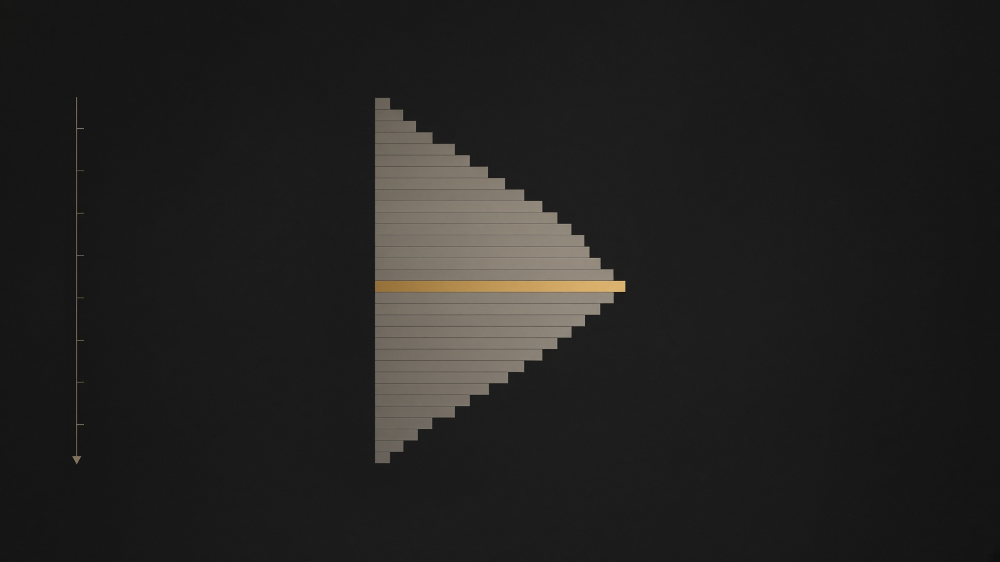
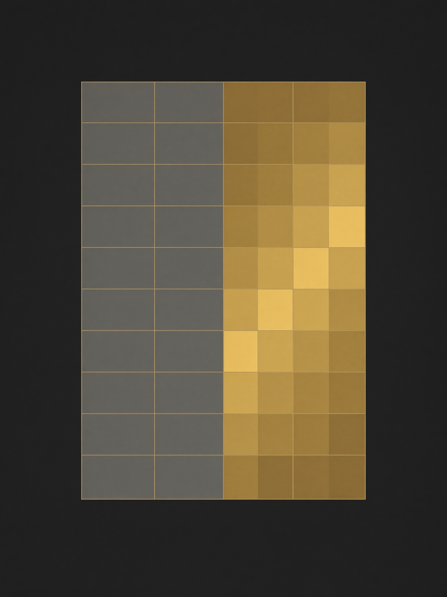
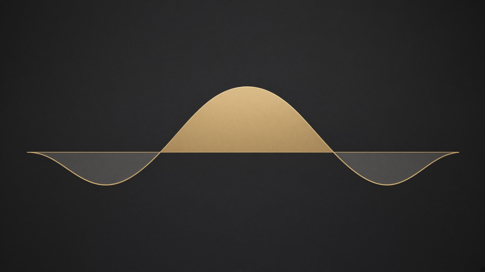

<!DOCTYPE html>
<html lang="es">
<head>
<meta charset="utf-8"/>
<meta name="viewport" content="width=device-width, initial-scale=1"/>
<title>LECTURA — contexto, dirección, timing</title>
<link rel="stylesheet" href="https://fonts.googleapis.com/css2?family=IBM+Plex+Mono:wght@400;500&family=IBM+Plex+Sans:ital,wght@0,400;0,500;0,600&family=Newsreader:opsz,wght@6..72,480;6..72,560;6..72,640&display=swap"/>
<style>
:root{--ink:#0e1114;--ink2:#151a1f;--line:#2c343d;--paper:#efe8d8;--muted:#a39e90;--faint:#736e64;--brass:#d4a24a;--brass2:#f3ddb0}
*{box-sizing:border-box}html,body{margin:0;background:var(--ink);color:var(--paper);font-family:"IBM Plex Sans",sans-serif}
a{color:inherit;text-decoration:none}button{font:inherit;background:none;border:0;color:inherit;cursor:pointer}
img{max-width:100%;display:block}
.wrap{max-width:46rem;margin:0 auto;padding:1.25rem 1.25rem 4rem}
.serif{font-family:Newsreader,Georgia,serif}.mono{font-family:"IBM Plex Mono",monospace}
h1{font-family:Newsreader,Georgia,serif;font-weight:560;font-size:clamp(2.4rem,7vw,3.6rem);line-height:.95;margin:.5rem 0 0}
.kicker{color:var(--brass);letter-spacing:.16em;text-transform:uppercase;font-size:.72rem}
.muted{color:var(--muted)}.faint{color:var(--faint)}
.cta{display:inline-flex;align-items:center;height:3rem;padding:0 1.3rem;background:var(--brass);color:var(--ink);font-weight:500;margin-top:1.2rem}
.shots{display:grid;grid-template-columns:1fr 1fr 1fr;gap:.4rem;margin-top:1.2rem}
.shots img{height:7rem;width:100%;object-fit:cover;border:1px solid var(--line)}
ol{list-style:none;margin:0;padding:0}
.mod{display:grid;grid-template-columns:2.4rem 1fr auto;gap:.7rem;padding:.75rem 0;border-bottom:1px solid var(--line)}
.card{display:block;border:1px solid var(--line);background:var(--ink2);margin:0 0 1rem 1.4rem}
.card img{height:8rem;width:100%;object-fit:cover}
.card .pad{padding:1rem}
.spine{position:relative}
.dot{position:absolute;left:0;top:.35rem;width:.7rem;height:.7rem;border:1px solid var(--line);background:var(--ink)}
.dot.on{background:var(--brass);border-color:var(--brass)}
.bar{height:1px;background:var(--line);margin-top:.8rem}.bar>i{display:block;height:1px;background:var(--brass)}
.lesson{display:grid;grid-template-columns:4.5rem 1fr;gap:.7rem;padding:.8rem 0;border-bottom:1px solid var(--line);align-items:center}
.lesson img{height:3.2rem;width:4.5rem;object-fit:cover;border:1px solid var(--line)}
.point{border-left:1px solid var(--brass);padding-left:.9rem;margin:.8rem 0;line-height:1.55}
.ex{border:1px solid var(--line);background:var(--ink2);padding:1rem;margin-top:1.2rem}
.row{display:flex;justify-content:space-between;gap:1rem;border-top:1px solid var(--line);padding:.45rem 0}
figure{margin:1.2rem 0}figure img{width:100%;border:1px solid var(--line)}
.actions{display:flex;flex-wrap:wrap;gap:.6rem;margin-top:1.2rem}
.primary{background:var(--brass);color:var(--ink);height:3rem;padding:0 1rem}
.ghost{border:1px solid var(--line);height:3rem;padding:0 1rem}
.nav{display:flex;justify-content:space-between;gap:1rem;margin-top:1.4rem;color:var(--muted)}
header.sticky{position:sticky;top:0;background:rgba(14,17,20,.94);border-bottom:1px solid var(--line);z-index:2}
header.sticky .wrap{display:flex;justify-content:space-between;align-items:center;padding-top:.7rem;padding-bottom:.7rem}
input{height:2.75rem;width:100%;background:var(--ink);color:var(--paper);border:1px solid var(--line);padding:0 .6rem;font-family:"IBM Plex Mono",monospace}
label{display:flex;flex-direction:column;gap:.3rem;font-size:.72rem;letter-spacing:.08em;text-transform:uppercase;color:var(--faint)}
.fields{display:grid;gap:.7rem;margin-top:.8rem}
@media(min-width:640px){.fields.z{grid-template-columns:1fr 1fr 1fr}.fields.log{grid-template-columns:1fr 1fr}}
.note{color:var(--faint);font-size:.9rem;margin-top:2rem;line-height:1.5}
p{line-height:1.55}
</style>
</head>
<body>
<div id="app"></div>
<script>
const MODULES = [{"id":"01","code":"01","title":"Introducción","pillar":"Base","blurb":"Para qué sirve el framework y cómo se recorre: de un patrón visual a una lectura que se puede medir.","lessons":[{"id":"01-01","title":"Introducción al curso","summary":"El programa no entrega un setup cerrado. Enseña a leer el mismo mercado en tres capas que se encadenan: contexto, dirección y timing.","points":["Contexto responde dónde está el precio respecto del valor (Volume Profile y Auction Market Theory).","Dirección responde hacia qué lado el posicionamiento de opciones y la cobertura de dealers condicionan el movimiento (gamma y flujo).","Timing responde cuándo la interacción agresiva entre compradores y vendedores confirma o invalida esa lectura (order flow y footprint).","Una operación nace solo cuando las tres capas apuntan al mismo lado. Si una falta, no hay trade: hay una hipótesis incompleta."],"example":{"kicker":"Misma barra, tres preguntas","text":"NQ en 30 minutos abre el RTH dentro del valor de ayer y el GEX del índice está positivo. El footprint de la primera hora muestra absorción en el máximo del rango. Contexto = balance. Dirección = reversión a la media. Timing = no perseguir el breakout. La decisión no es “un patrón de vela”: es la intersección de las tres lecturas."},"sources":[{"cite":"Dalton, J., Jones, E. & Dalton, R. (2013). Mind Over Markets.","note":"Marco de subasta, valor y aceptación/rechazo que sostiene la capa de contexto."},{"cite":"Harris, L. (2003). Trading and Exchanges.","note":"Distinción entre liquidez agresiva y pasiva, base del timing."}],"figure":{"src":"figures/balance.jpg","alt":"Precio dentro de una banda y precio que abandona la banda","caption":"Izquierda: el precio rota dentro del valor. Derecha: lo abandona y construye valor nuevo. Esa es la primera división del framework."},"reading":["El programa está organizado como una cadena, no como una lista de indicadores. Primero se decide si el día está en balance o si el valor está migrando. Después se mira si el régimen de gamma amortigua o amplifica ese movimiento. Recién entonces se baja al footprint para ver si el extremo confirma. Invertir el orden produce trades que ‘se ven bien’ en una sola capa y están ciegos en las otras dos.","Una operación, en este marco, es la intersección. Si el perfil dice balance, el GEX dice expansión y el footprint muestra continuación, no hay trade: hay una contradicción que hay que resolver antes de poner una orden. El tamaño y el stop viven en la capa que definió la idea. Una idea de valor diario no se invalida con un tick del footprint.","Lo que no hace esta guía es reemplazar las clases. Cada lección traduce el título del índice a un mecanismo público, con un número y una fuente. Los parámetros que el autor reserva —la ventana exacta, el k, el stop en puntos— no aparecen porque no fueron publicados."]},{"id":"01-02","title":"Índice","summary":"Seis módulos, en orden. Los tres del medio son el núcleo operativo. El último convierte la lectura en algo testeable.","points":["01 Introducción y 02 Dinámicas de precio arman el lenguaje: subasta, fractalidad, agresividad y microestructura.","03 es contexto (AMT y Volume Profile, 12 lecciones). 04 es timing (order flow y footprint, 14). 05 es dirección (gamma y derivados, 7).","06 es el puente cuantitativo: retornos, volatilidad, regresión, anomalías, series de tiempo, VaR y Monte Carlo.","El orden importa. Medir un z-score sin saber qué es valor, o leer un footprint sin saber si el día está en balance, produce señales huérfanas."],"example":{"kicker":"Cómo usar este roadmap","text":"Marcá cada lección al terminarla. El progreso queda en este navegador. Recorré en orden la primera vez. La segunda, volvé solo a la capa que te falla en el replay: si entrás tarde, es timing; si operás el lado equivocado del valor, es contexto; si el régimen de gamma te contradice, es dirección.","rows":[{"k":"Módulos","v":"6"},{"k":"Lecciones","v":"56"},{"k":"Núcleo","v":"03 · 04 · 05"}]},"sources":[{"cite":"López de Prado, M. (2018). Advances in Financial Machine Learning.","note":"Por qué una idea de trading tiene que sobrevivir una prueba fuera de muestra antes de llamarse edge."}],"figure":{"src":"figures/sesion.jpg","alt":"Sesión con la actividad concentrada al inicio","caption":"La sesión no es uniforme. La densidad de la izquierda es la apertura del RTH: ahí se procesa lo que pasó afuera."},"reading":["Conviene recorrer los módulos en el orden en que están. Los dos primeros arman el vocabulario: subasta, agresivo contra pasivo, prueba fallida. El tercero enseña a ubicar el precio respecto del valor. El cuarto enseña a no disparar hasta que el flujo haga algo en esa ubicación. El quinto dice si el hedge de opciones está a favor de la reversión o de la extensión. El sexto convierte esa frase en una regla que se puede rechazar.","La segunda pasada no se hace de punta a punta. Se vuelve a la capa que falló en el replay. Si el lado estaba bien y la entrada fue tarde, el problema es el módulo 04. Si se operó un breakout en un día que nunca aceptó fuera de valor, el problema es el 03. Si la regla se ve bien solo en la muestra donde se eligieron los parámetros, el problema es el 06.","Marcar una lección no la cierra. La marca es un registro de que la lectura se hizo. El progreso vive en este navegador y se puede borrar. No hay cuenta ni ranking."]},{"id":"01-03","title":"Ver el mercado más allá de patrones","summary":"Un patrón es una descripción. Una lectura es un mecanismo: quién comercia, contra qué liquidez y en qué régimen de volatilidad.","points":["Dos velas idénticas pueden ser cosas opuestas: una ruptura aceptada fuera de valor, o un upthrust que vuelve al rango.","El mecanismo pregunta por inventario (quién quedó largo o corto), por flujo (quién agredió) y por el régimen (volatilidad y gamma).","Si no podés decir qué evidencia invalidaría la idea, no es una lectura: es una etiqueta."],"example":{"kicker":"La misma mecha, dos mecanismos","text":"ES hace una mecha de 8 puntos sobre el VAH y cierra adentro. Caso A: delta muy positivo y el ask se renueva — absorción de compras, rechazo. Caso B: delta positivo, el ask desaparece y la siguiente barra acepta arriba — continuación. El dibujo es el mismo. El libro no."},"sources":[{"cite":"O'Hara, M. (1995). Market Microstructure Theory.","note":"El precio es el resultado de un proceso de información y liquidez, no de una forma geométrica."},{"cite":"Mandelbrot, B. & Hudson, R. (2004). The (Mis)Behavior of Markets.","note":"Las formas se parecen entre escalas; la distribución de retornos no es la campana de manual."}],"figure":{"src":"figures/balance.jpg","alt":"Dos comportamientos de precio sobre la misma banda","caption":"La misma banda de valor admite dos mecanismos. Quedarse adentro es una lectura. Salir y aceptar afuera es otra."},"reading":["Dos velas iguales pueden ser una aceptación y un rechazo. La diferencia no está en la mecha: está en si el volumen se quedó en el extremo, si el lado que empujó consiguió precio, y si el día ya estaba migrando. Llamar ‘martillo’ a las dos es quedarse en la descripción y perder el mecanismo.","Una lectura tiene que decir qué la mata. ‘Sigue alcista mientras no pierda el VAL’ es una lectura. ‘Se ve fuerte’ no lo es, porque no existe un dato que la obligue a cambiar. Sin invalidación, cualquier resultado se puede narrar a favor.","Los patrones no están prohibidos. Están incompletos. Sirven como atajo visual después de que el mecanismo ya está nombrado, no antes."]},{"id":"01-04","title":"Identificar, cuantificar y capitalizar","summary":"Toda lectura de este roadmap pasa por tres verbos. Si falta uno, no se opera.","points":["Identificar: nombrar el régimen (balance o tendencia), la ubicación (dentro de valor, extremo, fuera) y el lado que agrede.","Cuantificar: convertir eso en un número comparable — distancia al POC en desviaciones del valor, z-score del retorno, ratio de imbalance, gamma neta.","Capitalizar: solo entonces definir entrada, invalidación y tamaño. El tamaño sale del riesgo en puntos y del stop, no del entusiasmo.","Capitalizar sin cuantificar es discrecionalidad disfrazada. Cuantificar sin identificar es un backtest de ruido."],"example":{"kicker":"De la frase al número","text":"“Está extendido” no es operable. “El retorno de 30 minutos es +2,4σ contra una ventana de una sesión, el precio está 1,3 desviaciones sobre el VAH y el día es de balance” sí lo es. Recién ahí se decide si el trade es reversión, y con qué stop.","rows":[{"k":"Identificar","v":"Balance + extensión sobre VAH"},{"k":"Cuantificar","v":"z = +2,4 · distancia = 1,3σ"},{"k":"Capitalizar","v":"Fade solo si el timing absorbe"}]},"sources":[{"cite":"Bailey, D., Borwein, J., López de Prado, M. & Zhu, Q. (2014). Pseudo-Mathematics and Financial Charlatanism. Notices of the AMS, 61(5).","note":"Cuantificar incluye no creerse el mejor backtest de una grilla de parámetros."}],"figure":{"src":"figures/retornos.jpg","alt":"Precio que sube de nivel al lado de una serie que oscila","caption":"El precio se va. El retorno se queda alrededor de un eje. Cuantificar exige pasar del gráfico de la izquierda al de la derecha."},"reading":["Identificar es ponerle nombre al régimen, a la ubicación y al lado que está agrediendo. Cuantificar es volver comparable esa frase: distancia al valor en desviaciones, z-score del retorno, ratio de imbalance, signo de la gamma. Capitalizar es recién ahí elegir entrada, invalidación y contratos. Saltar al tercer verbo es discrecionalidad con vocabulario técnico.","Un umbral en puntos envejece cuando el índice cambia de nivel. NQ no vale lo mismo en 2020 que en 2026, y un movimiento de 40 puntos no es el mismo evento. Un umbral en unidades de la volatilidad reciente viaja mejor. Por eso el módulo 06 insiste en log-retornos y en sigma móvil.","Cuantificar también incluye no creerse el mejor resultado de una grilla. Bailey, Borwein, López de Prado y Zhu mostraron que elegir el máximo de un backtest y presentarlo como expectativa es un error de método, no de mala suerte."]}]},{"id":"02","code":"02","title":"Dinámicas avanzadas de precio","pillar":"Estructura","blurb":"Cómo se mueve el precio antes de mirar un indicador: escala, agresividad, trampas de Wyckoff y el libro.","lessons":[{"id":"02-01","title":"Dinámicas avanzadas de precio","summary":"El precio no “sube o baja”. Alterna descubrimiento (busca liquidez nueva) y equilibrio (rota alrededor de un valor ya aceptado).","points":["En descubrimiento el rango se expande y el valor migra. En equilibrio el rango se recicla y los extremos se rechazan.","La dinámica manda al setup: la misma absorción en equilibrio es fade; en descubrimiento fuerte suele ser pausa, no techo.","Una dinámica se confirma con aceptación: dos cierres fuera del valor previo, no una mecha."],"example":{"kicker":"Día de descubrimiento","text":"El valor de ayer en NQ era 21.040–21.180, POC 21.100. Hoy el RTH abre en 21.240 y la primera hora construye valor entero arriba de 21.200. No es “un gap a fade por defecto”: es migración de valor. El fade solo vuelve a ser la hipótesis si el precio reingresa y es aceptado dentro del valor viejo."},"sources":[{"cite":"Steidlmayer, J. P. & Koy, K. (1986). Markets and Market Logic.","note":"Origen del Market Profile: el mercado alterna desarrollo de valor y exploración."}],"figure":{"src":"figures/spring.jpg","alt":"Prueba bajo el rango y prueba sobre el rango","caption":"Descubrimiento y equilibrio se ven en si la salida del rango se acepta o se rechaza. Una mecha que vuelve no es todavía un régimen nuevo."},"reading":["El precio alterna dos trabajos. En equilibrio facilita el comercio alrededor de un valor ya aceptado: rota, rechaza extremos, vuelve. En descubrimiento busca a alguien dispuesto a negociar más arriba o más abajo, y el valor se muda con él. La misma absorción significa cosas distintas en cada trabajo.","La confirmación no es una mecha. Son cierres y volumen que se quedan del otro lado. Dos barras de 30 minutos construyendo actividad fuera del valor previo pesan más que una excursión que vuelve antes del cierre.","Operar como si todos los días fueran de equilibrio es el sesgo más caro de este estilo. El día de descubrimiento es menos frecuente y es exactamente el día en que el fade del extremo deja de ser la hipótesis por defecto."]},{"id":"02-02","title":"Fractalidad del precio","summary":"La subasta se parece a sí misma en varias escalas, pero el tamaño del movimiento no escala en forma lineal. Por eso un nivel de diario no se opera con el stop de un minuto.","points":["Un swing de 30 minutos puede ser, en el footprint, una sola subasta con exceso arriba y abajo.","La estructura (máximo que no se acepta, mínimo que se defiende) se repite; la varianza no. Colas gruesas: un movimiento de 4σ ocurre más de lo que dice la normal.","Regla práctica: la invalidación vive en la escala de la idea. Idea de perfil diario, stop más allá del exceso diario, no del tick."],"example":{"kicker":"Misma forma, otra escala","text":"Un spring de Wyckoff en el mínimo del día (barra de 30 min) y un spring de tres precios en el footprint son el mismo mecanismo: prueba de liquidez por debajo y recuperación. El primero arriesga el exceso de la sesión. El segundo arriesga unos ticks y no “representa” al día."},"sources":[{"cite":"Mandelbrot, B. (1963). The Variation of Certain Speculative Prices. The Journal of Business, 36(4).","note":"Los retornos tienen colas pesadas: escalar stops como si fueran gaussianos subestima el golpe."}],"figure":{"src":"figures/spring.jpg","alt":"La misma forma de prueba en dos paneles","caption":"La forma se repite de escala. El riesgo no: el spring del día y el spring de tres precios no comparten stop."},"reading":["La subasta se parece a sí misma en el gráfico de un minuto, en el de 30 minutos y en el del día. Un spring chico y un spring de sesión son el mismo dibujo de ‘probaron abajo y no aceptaron’. Lo que no se parece es la cuenta: la varianza no escala en forma lineal, y las colas de los retornos son más pesadas que las de una normal.","Por eso la invalidación vive en la escala de la idea. Si la idea es el exceso del día, el stop va detrás de ese exceso. Si la idea es un rechazo de tres precios en el footprint, el stop es de ticks y no representa al día. Mezclar las dos escalas es cómo un scalp se convierte en una posición de sesión sin haberlo decidido.","Mandelbrot lo escribió en 1963 para precios especulativos: los movimientos grandes ocurren más de lo que el manual gaussiano admite. Un sistema que dimensiona como si un movimiento de cuatro desviaciones fuera casi imposible se va a encontrar con ese movimiento."]},{"id":"02-03","title":"Call the Ask (llamada a la oferta)","summary":"Comprar a mercado es levantar la oferta. “Call the ask” nombra esa agresividad: alguien paga el ask y consume liquidez pasiva.","points":["Hit the bid = venta agresiva. Lift / call the ask = compra agresiva. El precio solo se desplaza cuando un lado consume al otro más rápido de lo que se repone.","Si el ask se levanta y se repone en el mismo precio, hay pasivo vendedor absorbiendo. El precio no avanza: la agresividad se gasta.","No confundir delta positivo con continuación. Delta positivo + precio que no avanza es la definición operativa de absorción de compras."],"example":{"kicker":"Libro de 4 precios","text":"En un futuro, el ask de 21.105 muestra 40 contratos. Entran compras por 40, el precio no pasa a 21.105,25 y el ask vuelve a mostrar 40. Alguien está reponiendo oferta. Los compradores llamaron al ask y no obtuvieron progreso. Eso es información, no una vela verde.","rows":[{"k":"Ask consumido","v":"40"},{"k":"Precio","v":"sin avance"},{"k":"Lectura","v":"reposición de oferta"}]},"sources":[{"cite":"Hasbrouck, J. (2007). Empirical Market Microstructure.","note":"El impacto de una orden depende de si consume liquidez o de si es absorbida."},{"cite":"Cont, R., Kukanov, A. & Stoikov, S. (2014). The Price Impact of Order Book Events. Journal of Financial Econometrics, 12(1).","note":"El cambio de precio se relaciona con el desbalance del libro, no con el volumen a secas."}],"figure":{"src":"figures/absorcion.jpg","alt":"Flujo chocando contra una línea que el precio no cruza","caption":"Llamar al ask es empujar. Si el precio no avanza, el pasivo del otro lado está reponiendo. El punto no es el color de la vela."},"reading":["Hay dos maneras de comprar. Pagar el ask es agresivo: se consume la oferta que estaba descansando. Sentarse en el bid es pasivo: se espera que alguien venda. ‘Call the ask’ nombra la primera. El precio solo se desplaza cuando un lado consume al otro más rápido de lo que ese otro repone.","Si entran compras, el ask se levanta y en el mismo precio vuelve a aparecer la misma oferta, las compras se gastaron. El delta puede ser positivo y el precio, quieto. Esa combinación es absorción de compras, no continuación. Leerlo como ‘entraron compradores, luego va a subir’ invierte al ganador de la subasta.","Cont, Kukanov y Stoikov muestran que el cambio de precio se asocia al desbalance del libro, no al volumen a secas. Mucho volumen con libro que se repone es profundidad. Mucho volumen con libro que desaparece es impacto."]},{"id":"02-04","title":"Upthrust y Spring","summary":"Dos pruebas de liquidez que fallan. El spring perfora un soporte y recupera. El upthrust perfora una resistencia y vuelve a entrar.","points":["No son patrones de vela: son subastas que buscan stops del otro lado y no encuentran aceptación.","La confirmación es el regreso y la aceptación de vuelta dentro del rango, idealmente con la agresividad del lado falso quedando absorbida.","Sin ubicación (un extremo de valor, un exceso previo, un pobre high/low) un spring es solo una mecha. La ubicación lo convierte en mecanismo."],"example":{"kicker":"Spring en el VAL","text":"VAL de la sesión compuesta: 5.611. El precio imprime 5.604, el delta de esa barra es muy negativo y el cierre vuelve sobre 5.613. Quien vendió el quiebre quedó atrapado debajo del valor. La hipótesis de largo vive mientras 5.604 no sea aceptado. Si la siguiente media hora cierra debajo, la prueba dejó de ser spring y pasó a ser descubrimiento bajista."},"sources":[{"cite":"Wyckoff, R. D. Método compilado en Wyckoff Stock Market Institute; Pruden, H. (2007). The Three Skills of Top Trading.","note":"Spring y upthrust como tests de oferta y demanda, no como figuras sueltas."}],"figure":{"src":"figures/spring.jpg","alt":"Spring a la izquierda y upthrust a la derecha","caption":"Izquierda: se perfora abajo y se recupera. Derecha: se perfora arriba y se vuelve a entrar. Las dos son pruebas de liquidez que fallan."},"reading":["El spring y el upthrust vienen de Wyckoff y no son figuras de velas. Son un test: el mercado busca stops del otro lado de un nivel y no encuentra aceptación. El spring perfora un soporte, mete a los cortos atrasados y recupera. El upthrust hace lo simétrico arriba.","Sin ubicación, los dos son mechas. La ubicación que les da sentido es un extremo de valor, un exceso previo o un poor high/low. La confirmación es el regreso y la aceptación de vuelta adentro del rango, idealmente con la agresividad del lado falso quedando absorbida en el extremo.","Si la barra siguiente cierra del otro lado del nivel y el volumen se queda ahí, la prueba dejó de ser prueba. Pasó a ser descubrimiento. Seguir llamándola spring porque ‘todavía puede volver’ es no aceptar el dato nuevo."]},{"id":"02-05","title":"Microestructura del precio","summary":"Debajo de la vela hay un spread, una cola de órdenes y un problema de selección adversa. Eso fija qué se puede y qué no se puede ver en un gráfico.","points":["El spread es el costo de la inmediatez. Quien cruza paga. Quien descansa cobra el spread y asume el riesgo de que el informado llegue.","Kyle (1985): el impacto es mayor cuando el flujo informado es más intenso y la profundidad, menor.","En 30 minutos, el spread de NQ es ruido chico frente al stop. En un scalp de pocos ticks, el spread y el slippage son el sistema entero."],"example":{"kicker":"Costo que el backtest esconde","text":"Un sistema de NQ en 30 minutos con una operación por día puede tolerar 1–2 ticks de slippage sin morir. El mismo modelo corrido en cada imbalance de 1 minuto no. La microestructura decide la frecuencia máxima honesta de una idea, antes que el profit factor del informe.","rows":[{"k":"Tick NQ","v":"0,25 pts = USD 5"},{"k":"1 tick ida y vuelta","v":"USD 10 / contrato"},{"k":"Pregunta","v":"¿el edge por trade cubre eso?"}]},"sources":[{"cite":"Kyle, A. (1985). Continuous Auctions and Insider Trading. Econometrica, 53(6).","note":"Profundidad, flujo informado e impacto."},{"cite":"Glosten, L. & Milgrom, P. (1985). Bid, Ask and Transaction Prices. Journal of Financial Economics, 14(1).","note":"El spread compensa a quien provee liquidez por operar contra informado."}],"figure":{"src":"figures/ladder.jpg","alt":"Libro con un lado mucho más cargado","caption":"Debajo de la vela hay profundidad desigual. El spread y ese desbalance son el costo real de entrar con prisa."},"reading":["Debajo de cada cierre hay un spread y una cola. Quien cruza paga la inmediatez. Quien descansa cobra el spread y corre el riesgo de que el informado llegue primero. Glosten y Milgrom armaron el spread alrededor de esa selección adversa. Kyle mostró que el impacto crece cuando hay más flujo informado y menos profundidad.","En una barra de 30 minutos de NQ, un tick es ruido frente a un stop de sesión. En un scalp de pocos ticks, el spread, la comisión y un tick de slippage son el sistema entero. La microestructura pone un techo a la frecuencia honesta de una idea, antes de que el informe de backtest diga lo contrario.","Un tick de NQ son 0,25 puntos, cinco dólares por contrato. Ida y vuelta son diez, sin comisión. Si el edge medio por trade no cubre eso con margen, la regla no es operable aunque el profit factor bruto supere uno."]}]},{"id":"03","code":"03","title":"Auction Market Theory y Volume Profile","pillar":"Contexto","blurb":"Dónde está el valor, cuándo el día está en balance y cuándo el valor está migrando.","lessons":[{"id":"03-01","title":"Auction Market Theory y contexto de mercado","summary":"El mercado es una subasta bilateral. Sube hasta que no encuentra más compradores y baja hasta que no encuentra más vendedores. El contexto es saber en qué tramo de esa subasta estás.","points":["La subasta busca facilitar el comercio: pasa tiempo donde se comercia más. Ese tiempo/volumen es el valor.","Contexto primero, trade después. Un imbalance alcista en el extremo de un día de balance no se lee igual que en la apertura de una tendencia.","Las dos preguntas de contexto: ¿el precio está dentro del valor aceptado? ¿ese valor se está manteniendo o migrando?"],"example":{"kicker":"Dos aperturas","text":"Apertura A: dentro del value area de ayer, superposición alta. Hipótesis inicial de balance: extremos se venden y se compran de vuelta al POC. Apertura B: por fuera del valor, con actividad que construye valor nuevo. Hipótesis de descubrimiento: no vender el primer extremo “porque está lejos”."},"sources":[{"cite":"Dalton, J. et al. (2013). Mind Over Markets.","note":"Desarrollo de la teoría de subasta aplicada al día."}],"figure":{"src":"figures/balance.jpg","alt":"Rotación dentro de valor contra migración","caption":"Contexto es decidir en cuál de los dos paneles está el día antes de mirar un imbalance."},"reading":["Auction Market Theory trata al mercado como una subasta bilateral. El precio sube mientras aparece alguien dispuesto a pagar más, y baja mientras aparece alguien dispuesto a vender más barato. El mercado pasa tiempo donde el comercio es fácil. Ese tiempo, o ese volumen, es el valor.","El contexto se resume en dos preguntas. ¿El precio está dentro de un valor ya aceptado? ¿Ese valor se mantiene o se está mudando? Con esas dos respuestas cambia el significado de todo lo que el footprint muestre después.","Dalton ordena el día alrededor de esa distinción: balance contra imbalance. No es un indicador. Es el estado que decide si el extremo se vende o se acompaña."]},{"id":"03-02","title":"Qué es el valor","summary":"Valor no es un precio justo fundamental. En este marco, valor es la zona donde el mercado aceptó comerciar: donde se concentró el volumen (o el tiempo).","points":["El Point of Control (POC) es el precio de mayor volumen. Es un imán en balance y un nivel que se abandona en tendencia.","Value Area es la zona que concentra una fracción convencional del volumen, casi siempre el 70%. No es un teorema: es una convención útil, como una banda.","Precio lejos del valor es una opinión. Precio que construye volumen lejos del valor viejo es un valor nuevo."],"example":{"kicker":"Opinión contra aceptación","text":"NQ cotiza 180 puntos sobre el POC de la semana pero el volumen de hoy se está acumulando ahí, no en el POC viejo. El “caro” de ayer es el valor de hoy. Venderlo porque está lejos del POC semanal es pelearse con la aceptación."},"sources":[{"cite":"Steidlmayer, J. P. Markets and Market Logic.","note":"Valor como precio facilitado por el comercio, no como target fundamental."}],"figure":{"src":"figures/perfil.jpg","alt":"Perfil de volumen con una barra central más larga","caption":"La barra larga es el POC: donde el mercado aceptó comerciar, no un precio justo fundamental."},"reading":["Valor, en este módulo, no es el precio que un modelo fundamental considera justo. Es la zona donde la subasta aceptó negociar. El Point of Control es el precio de mayor volumen de esa zona. En balance funciona como imán. En una migración se abandona, y pelearse con el POC viejo es operar el mapa de ayer.","El value area suele definirse como el 70% del volumen, expandiendo desde el POC hacia el precio vecino más negociado. Es una convención útil, del mismo tipo que una banda, no un teorema. Dos plataformas pueden dar un borde unos ticks distinto según cómo expanden.","Precio lejos del valor es una opinión del que mira. Precio que acumula volumen lejos del valor viejo es un valor nuevo. La diferencia es el volumen, no la distancia."]},{"id":"03-03","title":"Medición de valor","summary":"Se mide con la distribución de volumen por precio, no con un promedio móvil. De esa distribución salen POC, VAH y VAL.","points":["VAH y VAL son los bordes del área de valor. Dentro: precio aceptado. Fuera: exploración, que puede fallar o volverse valor nuevo.","El 70% se calcula expandiendo desde el POC hacia el precio vecino de mayor volumen, hasta cubrir ese porcentaje. Las plataformas lo hacen solas; hay que saber que el método de expansión cambia unos ticks el borde.","Una distribución en campana sugiere balance. Una distribución con dos jorobas (doble distribución) sugiere dos subastas: no las promedies en un solo “valor”."],"example":{"kicker":"Lectura de una sesión","text":"POC 21.100, VAH 21.155, VAL 21.040, volumen total de la sesión 420k contratos. El 70% cae entre 21.040 y 21.155. Un cierre en 21.180 está fuera de valor: es exploración, no todavía valor nuevo, hasta que el volumen lo acompañe.","rows":[{"k":"POC","v":"21.100"},{"k":"VAH / VAL","v":"21.155 / 21.040"},{"k":"Cierre 21.180","v":"fuera de valor"}]},"sources":[{"cite":"Dalton, J. (2013). Mind Over Markets, cap. sobre value area.","note":"Convención del 70% y la lógica de expansión desde el POC."}],"figure":{"src":"figures/perfil.jpg","alt":"Distribución de volumen por precio","caption":"El valor se mide en esa distribución. Los bordes del cuerpo, no las colas finas, son VAH y VAL."},"reading":["Medir el valor es leer la distribución, no un promedio móvil. Una campana única sugiere una sola subasta. Dos jorobas sugieren dos subastas separadas: un doble distribución. Promediarlas en un POC del medio suele marcar un desierto, el precio por donde el mercado pasó rápido y no se quedó.","VAH y VAL son los bordes de esa masa. Dentro, el precio está aceptado. Fuera, está explorando. La exploración se vuelve valor solo cuando la distribución engorda ahí. Un cierre aislado por encima del VAH todavía no es un value area nuevo.","En el ejemplo de trabajo de esta guía, un POC en 21.100 con VAH 21.155 y VAL 21.040 deja un cierre en 21.180 afuera. Eso es una excursión. La decisión de tradearla depende de si el flujo la rechaza o la acepta, que es el módulo siguiente."]},{"id":"03-04","title":"Configuración de Volume Profile","summary":"El perfil miente si la sesión, la sesión compuesta o el tick de agrupación están mal elegidos. La configuración es parte de la lectura.","points":["Perfil de sesión RTH y perfil compuesto (varios días) responden preguntas distintas. No se opera el POC compuesto con la lógica del POC de hoy.","Agrupar precios (tick multiplier) demasiado grueso esconde el POC. Demasiado fino lo vuelve ruido en un futuro de mucho volumen.","Separá RTH de ETH. Mezclar el overnight aplana el valor del día y esconde justo el inventario que la próxima lección usa."],"example":{"kicker":"Tres perfiles, tres respuestas","text":"En NQ de 30 minutos: perfil RTH de hoy para el valor del día; perfil de los últimos 5 RTH para el valor compuesto; perfil solo ETH para el inventario overnight. Si los tres POC coinciden, el mercado está anclado. Si el POC de hoy se separa del compuesto, el valor está migrando."},"sources":[{"cite":"CME Group. Contract specs, E-mini Nasdaq-100 (NQ): horario RTH y tick.","note":"El tick y la sesión no son preferencias estéticas: son la definición del instrumento."}],"widget":"profile","figure":{"src":"figures/perfil.jpg","alt":"Perfil de una sesión","caption":"Un perfil por pregunta. El de la sesión, el compuesto y el overnight no se superponen en un solo dibujo."},"reading":["El perfil responde a la sesión que se le pide. El RTH de hoy dice dónde se está construyendo el valor del día. El compuesto de varios RTH dice dónde estuvo anclado el mercado esta semana. El overnight dice qué inventario trae la apertura. Mezclar los tres en un solo histograma aplana justo lo que se quería ver.","La agrupación de precios también miente si está mal elegida. Un tick multiplier demasiado grueso esconde el POC. Uno demasiado fino, en un futuro con mucho volumen, convierte el perfil en ruido. Se elige una vez y se deja quieto durante el estudio.","Separar RTH de ETH no es una preferencia de horario. Es la condición para que el value area ‘de ayer’ signifique lo mismo todos los días."]},{"id":"03-05","title":"Reglas de balance","summary":"En balance el mercado es mean-reverting alrededor del valor. Las reglas dicen qué hacer en los bordes y qué evento rompe el régimen.","points":["Apertura dentro de valor y superposición con ayer: hipótesis de balance hasta que haya aceptación afuera.","En los bordes (VAH, VAL, excesos) se busca rechazo, no breakout, mientras el régimen siga siendo balance.","La regla se rompe con aceptación: actividad y cierres sostenidos fuera del valor. Ahí se deja de vender el extremo."],"example":{"kicker":"Protocolo corto","text":"Si apertura ∈ [VAL, VAH] y el IB (initial balance) no sale del valor de ayer: operar reversión en excesos hacia el POC, invalidación más allá del exceso. Si dos barras de 30 min cierran fuera y el perfil empieza a engordar ahí, el protocolo de balance queda suspendido."},"sources":[{"cite":"Dalton, J. Markets in Profile (2007).","note":"Balance versus imbalance como los dos estados que organizan el resto de las decisiones."}],"figure":{"src":"figures/perfil.jpg","alt":"Campana de volumen de un día en balance","caption":"En balance el cuerpo del perfil es el imán. Los extremos finos se rechazan hasta que el volumen engorda afuera."},"reading":["Las reglas de balance son un protocolo, no un pronóstico. Si la apertura cae dentro del valor de ayer y el rango inicial no se va, la hipótesis es que los extremos se rechazan hacia el POC. Se opera esa hipótesis hasta que haya aceptación afuera.","Aceptación, otra vez, no es una mecha. Son cierres sostenidos y volumen que empieza a formar valor del otro lado. Cuando eso ocurre, el protocolo de balance se suspende aunque el trade que se tenía en mente ‘todavía no haya tocado el stop’.","El error típico es vender el VAH de un día que nunca estuvo en balance. La regla no aplica. Aplicarla igual es forzar un fade sobre un descubrimiento."]},{"id":"03-06","title":"Inventario de overnight","summary":"La sesión electrónica deja un inventario: gente posicionada que al abrir el RTH necesita defender, cubrir o liquidar.","points":["Overnight largo (precio ETH muy arriba del valor RTH) crea vendedores potenciales si la apertura no sostiene.","El inventario no predice la dirección del día. Predice de qué lado está el dolor si la apertura falla.","Se lee junto con el perfil RTH previo, no en lugar de él."],"example":{"kicker":"ETH extendido","text":"Valor RTH de ayer: POC 21.100. El overnight opera 21.220–21.280 y el RTH abre en 21.250. Hay inventario largo overnight. Si la primera hora pierde 21.220 y acepta adentro del valor viejo, ese inventario queda del lado equivocado y alimenta el regreso. Si 21.220 se defiende y el valor se construye arriba, el inventario estaba bien y el gap es descubrimiento."},"sources":[{"cite":"Gao, L., Han, Y., Li, S. & Zhou, G. (2018). Market Intraday Momentum. Journal of Financial Economics, 129(2).","note":"La primera parte del día concentra información acumulada fuera del horario regular."}],"figure":{"src":"figures/sesion.jpg","alt":"Actividad densa al abrir la sesión","caption":"El overnight deja inventario. La apertura, la zona densa de la izquierda, es donde ese inventario se defiende o se liquida."},"reading":["La sesión electrónica posiciona gente que al abrir el RTH tiene algo que defender. Un overnight muy por encima del valor RTH deja inventario largo: si la apertura no sostiene, ese inventario se vuelve oferta. No predice el cierre del día. Predice de qué lado está el dolor si el primer intento falla.","Se lee junto con el perfil RTH, no en su lugar. Un gap que se sostiene y construye valor arriba convierte al inventario en el lado correcto. Un gap que pierde el borde y es aceptado de vuelta dentro del valor viejo convierte al inventario en combustible del regreso.","Gao, Han, Li y Zhou documentan que la primera parte del horario regular concentra información que se acumuló afuera. El inventario overnight es la versión de subasta de ese hecho."]},{"id":"03-07","title":"Fair Value","summary":"Fair value, en la jerga de futuros sobre índice, también nombra el precio teórico del futuro respecto del contado vía tasa y dividendos. No es el POC. Conviene no mezclar las dos palabras.","points":["Fair value del futuro ≈ contado × (1 + tasa × días/365) − dividendos esperados. Es una relación de arbitraje, no un soporte.","En AMT, “valor justo” se usa mal como sinónimo de POC. En este roadmap, POC es valor aceptado; fair value es el vínculo futuro-contado.","Un futuro caro contra su fair value no es una señal de short intradía. La base se mueve por tasas, dividendos y flujo, y el intradía se opera en el futuro, no en la base."],"example":{"kicker":"Dos números distintos","text":"NDX contado implica un NQ teórico 15 puntos debajo del futuro que está cotizando. Eso es base. Al mismo tiempo el POC de la sesión está 40 puntos debajo del precio. El desvío operable para un day trader de perfil es el segundo. El primero es un dato de arbitraje entre libros, no un target de 30 minutos."},"sources":[{"cite":"CME Group. Index futures fair value y cost of carry.","note":"Definición de base: tasa y dividendos, no Market Profile."}],"figure":{"src":"figures/balance.jpg","alt":"Banda de valor separada del recorrido del precio","caption":"Fair value del futuro contra el contado no es esta banda. Esta banda es aceptación. Conviene no usar la misma palabra para las dos."},"reading":["Fair value, en futuros de índice, también nombra otra cosa: el precio teórico del futuro contra el contado, por tasa y dividendos. Es una relación de arbitraje de la base. No es el POC y no es un soporte intradía.","Un NQ quince puntos ‘caro’ contra el índice contado no es una señal de short de 30 minutos. La base se mueve por tasas, dividendos y flujo entre libros. El day trader de perfil opera el futuro, no la base.","En esta guía, ‘valor’ se reserva para la aceptación de la subasta. Cuando haga falta hablar del vínculo futuro-contado, se dice base o fair value teórico, para no mezclar los dos números."]},{"id":"03-08","title":"RTH (Regular Trading Hours)","summary":"El volumen que construye valor de verdad en los índices CME se concentra en el horario regular. Mezclar ETH y RTH distorsiona el perfil.","points":["Para ES y NQ el RTH es 9:30–16:00 hora de Nueva York. El ETH existe y mueve precio, pero con menos profundidad.","Las reglas de balance, el value area “de ayer” y el initial balance se calculan sobre RTH salvo que explícitamente estudies el overnight.","Cerrar la posición al fin del RTH elimina el gap overnight por diseño. Es una decisión de proceso, no de cobardía."],"example":{"kicker":"Dónde aparece la señal","text":"En estudios de momentum intradía sobre índices, la mayor parte de la información de la apertura se procesa en la primera hora y media de RTH. Una anomalía de volatilidad a las 15:50 no es la misma que a las 10:05: queda poca sesión para que el flujo termine de incorporarse, y el cierre forzado está encima.","rows":[{"k":"RTH NQ/ES","v":"09:30–16:00 ET"},{"k":"Ventana densa","v":"primera 1–2 h"},{"k":"Cierre de proceso","v":"flat al fin de RTH"}]},"sources":[{"cite":"CME Group. Equity index futures trading hours.","note":"Definición oficial de RTH versus ETH."},{"cite":"Gao, Han, Li & Zhou (2018). Market Intraday Momentum.","note":"El momentum intradía de índices se concentra en ventanas concretas del horario regular."}],"figure":{"src":"figures/sesion.jpg","alt":"Sesión regular con el peso al principio","caption":"RTH no es un filtro estético. Es donde está la profundidad. La primera parte concentra el flujo."},"reading":["En ES y NQ el horario regular es de 9:30 a 16:00, hora de Nueva York. El electrónico mueve precio con menos profundidad. Las reglas de balance, el value area de ayer y el initial balance se calculan sobre el RTH salvo que el objeto de estudio sea explícitamente el overnight.","Cerrar la posición al fin del RTH saca el gap de la noche del resultado por diseño. Es una decisión de proceso. Un sistema que se dice intradía y deja la posición abierta está midiendo otra cosa: el overnight, que tiene otra distribución.","La densidad no es pareja dentro del RTH. La primera hora y media concentra volumen, datos de las 8:30 que el libro todavía está digiriendo, y el ajuste de lo que se hizo afuera. Una señal a las 15:50 tiene poca sesión por delante para que el flujo termine de incorporarse."]},{"id":"03-09","title":"Aplicación de conceptos","summary":"Checklist de contexto antes de mirar el footprint. Si el checklist no cierra, no hay lado.","points":["1. ¿Qué perfil estoy mirando (RTH de hoy, compuesto, overnight)?","2. ¿Apertura dentro o fuera de valor? ¿el valor de hoy se superpone con el de ayer?","3. ¿El precio está en POC, en borde o en exceso?","4. ¿Hay aceptación fuera (cierres + volumen) o solo una exploración?","Recién con esas cuatro respuestas se habilita el módulo de timing."],"example":{"kicker":"Una página de pre-mercado","text":"Anotá en cuatro líneas: VAL/POC/VAH de ayer, rango y POC del overnight, ubicación de la apertura, régimen tentativo (balance o descubrimiento). Esa hoja es el contexto. El footprint de las 10:12 no tiene permiso de contradecirla en silencio: o la confirma o la obliga a reescribirse."},"sources":[{"cite":"Dalton, J. Mind Over Markets — day types.","note":"Los tipos de día (normal, neutral, trend, double distribution) son la aplicación, no un capítulo aparte."}],"figure":{"src":"figures/sesion.jpg","alt":"Lectura de una sesión de izquierda a derecha","caption":"La hoja de pre-mercado sigue este orden: qué pasó antes del cuerpo de la sesión y dónde está la densidad ahora."},"reading":["Antes de mirar el footprint, la hoja del día cabe en cuatro líneas: VAL, POC y VAH de ayer; rango y POC del overnight; ubicación de la apertura; régimen tentativo. Si esas cuatro líneas no se pueden escribir, no hay contexto y el flujo de las 10:12 no tiene contra qué leerse.","El footprint no tiene permiso de contradecir esa hoja en silencio. O la confirma, o obliga a reescribirla con un dato de aceptación. ‘Igual entré porque el delta estaba lindo’ es saltarse el checklist.","Dalton clasifica tipos de día —normal, neutral, tendencia, doble distribución— como consecuencia de este desarrollo, no como una etiqueta que se elige a la mañana y se defiende hasta el cierre."]},{"id":"03-10","title":"Mean reversion","summary":"Volver al valor es la apuesta por defecto del balance. No es “vender lo que subió”: es vender exploración no aceptada.","points":["La reversión se toma en excesos y bordes, con el POC o el medio del valor como imán, no como promesa.","Se invalida cuando la exploración es aceptada. El stop va más allá del exceso, no en el medio de la mecha.","Combinada con gamma positiva, la reversión tiene un mecanismo extra: el dealer que está largo gamma vende rallies y compra dips."],"example":{"kicker":"Fade del VAH","text":"VAH 21.155, exceso hasta 21.172, cierre de la barra de vuelta en 21.150, delta de la mecha positivo pero el ask se repuso. Entrada de corto 21.150, invalidación 21.174 (detrás del exceso), objetivo conservador el POC 21.100. Si 21.160 es aceptado en la barra siguiente, no hay fade: hay que cancelar la idea aunque “todavía no tocó el stop mental”."},"sources":[{"cite":"Jegadeesh, N. & Titman, S. (1993). Returns to Buying Winners and Selling Losers. The Journal of Finance, 48(1).","note":"El momentum existe en unos horizontes y la reversión en otros. El horizonte no es un detalle."}],"figure":{"src":"figures/balance.jpg","alt":"Precio que sale de la banda y vuelve","caption":"Mean reversion es apostar a que la salida no fue aceptada. Si el precio se queda afuera, el panel derecho reemplaza al izquierdo."},"reading":["La reversión a la media, acá, no es vender porque subió. Es vender una exploración que el mercado no aceptó, con el POC como imán posible y no como promesa. El stop va detrás del exceso. Ponerlo en el medio de la mecha es salir del mecanismo por el que se entró.","Se invalida cuando la exploración es aceptada, aunque el precio todavía no haya tocado un stop mental. La aceptación es el dato. El stop es la última red, no la definición.","Cuando además la gamma del dealer es positiva, el hedge vende los rallies y compra los dips. La reversión tiene entonces un segundo mecanismo, no solo el del perfil. Si la gamma es negativa, ese segundo mecanismo empuja al revés y el fade necesita más evidencia, no menos."]},{"id":"03-11","title":"Trend following","summary":"Cuando el valor migra, la operación correcta es acompañar la aceptación, no fade-ar el primer extremo.","points":["Señales de migración: apertura fuera de valor, value area que no se superpone, POC del día que se desplaza en la dirección del movimiento, excesos que se sostienen.","En tendencia se compran retrocesos al valor nuevo (el VAH que fue techo y ahora es piso), no se vende el high “porque está extendido”.","El día de tendencia es el menos frecuente y el que más daño hace a quien solo sabe operar balance."],"example":{"kicker":"VAH que cambia de rol","text":"Ayer VAH 21.155. Hoy el precio acepta arriba, construye un value area 21.180–21.290 y retrocede a 21.175 (el viejo exterior, ahora borde inferior del valor nuevo). Ese retroceso, con defensa en el footprint, es la entrada de continuación. Vender 21.290 porque “está lejos del POC de ayer” es la operación del régimen equivocado."},"sources":[{"cite":"Moskowitz, T., Ooi, Y. H. & Pedersen, L. H. (2012). Time Series Momentum. Journal of Financial Economics, 104(2).","note":"La continuación tiene evidencia en series de tiempo; el intradía exige además el régimen de subasta correcto."}],"figure":{"src":"figures/balance.jpg","alt":"Precio que deja la banda y arma otra más arriba","caption":"Trend following es el panel derecho: el valor migró. El extremo ya no se vende solo porque está lejos."},"reading":["Cuando el valor migra, la operación de balance se vuelve la operación equivocada. Las señales de migración son concretas: apertura fuera de valor, value area que no se superpone con el de ayer, POC del día que se desplaza en la dirección del movimiento, excesos que se sostienen.","En ese régimen se compran retrocesos al valor nuevo. El VAH de ayer, una vez aceptado por arriba, puede pasar a ser el borde inferior de hoy. Vender el high porque ‘está extendido’ respecto del POC viejo es usar el mapa que el mercado ya dejó.","El momentum de series de tiempo tiene evidencia en horizontes más largos, de Moskowitz, Ooi y Pedersen entre otros. En intradía no alcanza con citarlo: hace falta el régimen de subasta. Sin migración de valor, ‘trend following’ es perseguir una mecha."]},{"id":"03-12","title":"Sesgo estructural","summary":"El sesgo no es una flecha del analista. Es lo que queda cuando el contexto —valor, inventario, aceptación— deja un lado más caro de contradecir.","points":["Sesgo largo estructural del día: valor migrando arriba, inventario corto atrapado, retrocesos defendidos.","Sesgo corto: lo simétrico. Sesgo neutro: balance, y el “sesgo” es operar los extremos hacia el POC, no adivinar el cierre.","El sesgo se reescribe con evidencia, no con el PnL. Si el mercado acepta del otro lado, el sesgo anterior quedó viejo aunque la posición todavía no se haya cerrado."],"example":{"kicker":"Una frase que sí se puede decir","text":"“Sesgo largo mientras el RTH sostenga 21.175, que es el VAL de hoy y el antiguo VAH. Invalidación: aceptación bajo 21.160. Hasta entonces los cortos son contra el valor, no ‘hedge’.” Eso es un sesgo estructural. “Yo creo que cierra verde” no lo es."},"sources":[{"cite":"Dalton, J. Markets in Profile.","note":"El sesgo sale del desarrollo del día, y se actualiza cuando cambia el desarrollo."}],"figure":{"src":"figures/balance.jpg","alt":"Dos regímenes posibles del mismo día","caption":"El sesgo es elegir un panel y escribir qué evidencia obliga a pasar al otro."},"reading":["Sesgo estructural no es una flecha. Es lo que queda cuando valor, inventario y aceptación dejan un lado más caro de contradecir. Largo: el valor migra arriba y los retrocesos se defienden. Corto: lo simétrico. Neutro: balance, y el trabajo es operar extremos hacia el POC, no adivinar el color del cierre.","Se reescribe con evidencia, no con el resultado de la posición. Si el mercado acepta del otro lado, el sesgo anterior quedó viejo aunque la orden siga abierta. Cerrar o no es una decisión de riesgo. Seguir contando la historia vieja es una decisión de método, y es la mala.","Una frase que sí se puede decir cabe en dos líneas: el nivel que sostiene el sesgo, y el evento que lo invalida. ‘Yo creo que cierra verde’ no nombra ninguno de los dos."]}]},{"id":"04","code":"04","title":"Order flow, footprint y filtrado cuantitativo","pillar":"Timing","blurb":"Quién agrede, quién absorbe y cómo filtrar esa lectura para no operar cada imbalance.","lessons":[{"id":"04-01","title":"Orderflow y filtrado cuantitativo","summary":"El order flow es la cinta desagregada: cada transacción que golpeó el bid o levantó el ask. El filtro cuantitativo decide cuáles de esas lecturas merecen una orden.","points":["Sin filtro, el footprint produce una opinión por barra. Con filtro, solo se mira el flujo en la ubicación que el contexto ya marcó.","Filtros típicos: ubicación (borde de valor, exceso), umbral de delta o de imbalance, y una sola operación por ventana.","El filtro se elige antes de ver el día. Ajustarlo después de ver el resultado es overfitting manual."],"example":{"kicker":"Filtro mínimo","text":"Solo se lee el footprint de la barra de 30 minutos que toca VAH o VAL. Dentro del valor, el flujo se anota y no se opera. Resultado: la mayoría de los imbalances del día quedan fuera del proceso. Eso es el filtro haciendo su trabajo."},"sources":[{"cite":"Hasbrouck, J. (2007). Empirical Market Microstructure.","note":"El flujo de órdenes es el objeto; el precio es el residuo."}],"figure":{"src":"figures/ladder.jpg","alt":"Desbalance entre bid y ask","caption":"El filtro cuantitativo decide cuál de estas filas se mira. Sin ubicación, el desbalance es ruido."},"reading":["Order flow es la cinta separada por lado: cada transacción que golpeó el bid o levantó el ask. Sin esa separación solo hay volumen, y el volumen no dice quién inició. El filtro cuantitativo es la regla, escrita antes, que decide cuáles de esas lecturas llegan a una orden.","El filtro mínimo de esta guía es de ubicación. El footprint se mira cuando el precio toca un borde que el perfil ya marcó. Dentro de la campana, el flujo se anota y no se opera. La mayoría de los imbalances del día quedan afuera. Eso es el filtro funcionando, no una sesión aburrida.","Ajustar el filtro después de ver el día es overfitting hecho a mano. Si a las 15:00 se baja el umbral porque no hubo señales, el resultado de esa tarde ya no mide la regla."]},{"id":"04-02","title":"Software y proveedor de datos","summary":"El footprint es tan bueno como el feed. Datos agregados o atrasados no sirven para leer agresividad.","points":["Hace falta un feed con cada trade clasificado en bid o ask (o una reconstrucción seria del lado). CME en índices: Rithmic, dxFeed, CQG, o el dato del broker si realmente entrega el tape.","Plataformas que dibujan footprint y perfil: Sierra Chart, ATAS, Bookmap, Quantower, MotiveWave. El concepto no cambia con el logo.","Para gamma hace falta cadena de opciones (CBOE / CME) más un cálculo o un proveedor (GEXBOT, SpotGamma u otro). No sale del gráfico de velas."],"example":{"kicker":"Stack mínimo de estudio","text":"Un solo instrumento (NQ o ES), un solo feed, una plataforma con footprint + volume profile de sesión, y una hoja aparte para el régimen de gamma. Dos feeds del mismo mercado “para confirmar” suelen confirmar el atraso, no la lectura.","rows":[{"k":"Tape","v":"trade a trade, bid/ask"},{"k":"Perfil","v":"sesión RTH"},{"k":"Gamma","v":"cadena, no la vela"}]},"sources":[{"cite":"CME Group. Market data y MDP 3.0.","note":"La clasificación bid/ask nace en el feed, no en el indicador."}],"figure":{"src":"figures/footprint.jpg","alt":"Grilla de un footprint","caption":"Sin un feed que separe bid y ask, esta grilla no existe. El software solo la dibuja."},"reading":["El footprint vale lo que vale el feed. Hace falta cada trade clasificado en bid o ask, o una reconstrucción seria. En índices CME eso viene de Rithmic, dxFeed, CQG o del dato del broker si de verdad entrega el tape y no una vela pintada.","Sierra Chart, ATAS, Bookmap, Quantower o MotiveWave dibujan la misma idea con distinto logo. Cambiar de plataforma no cambia el mecanismo. Cambiar de feed malo a feed bueno, sí.","Gamma no sale de esa plataforma. Sale de la cadena de opciones, calculada o comprada a un proveedor. Mezclar un footprint excelente con un GEX inventado a ojo no completa el framework: le falta la capa de dirección."]},{"id":"04-03","title":"Configuración de plataformas","summary":"Antes de interpretar, fijá sesión, zona horaria, agrupación de precios y el umbral de imbalance. Si no, comparás dibujos distintos creyendo que es el mercado.","points":["Zona horaria de Nueva York para RTH. Un perfil “del día” calculado en hora de Buenos Aires parte el overnight en el lugar equivocado.","Imbalance por defecto en muchas plataformas: 300% (el lado agresivo triplica al otro) y un mínimo de contratos. Es una convención. Anotala y no la cambies a mitad del estudio.","Delta por barra y delta acumulado de la sesión en el mismo gráfico. Uno sin el otro se mallee."],"example":{"kicker":"Plantilla que no se toca","text":"NQ, 30 minutos, RTH resaltado, footprint con ask a la derecha y bid a la izquierda, imbalance 300% con mínimo 20 contratos, volume profile de la sesión a la izquierda, delta debajo. Esa plantilla queda congelada el tiempo que dure el estudio. Cambiar el umbral el miércoles porque “no salían señales” invalida el jueves."},"sources":[{"cite":"Documentación de Sierra Chart / ATAS sobre imbalance y number bars.","note":"El umbral es un parámetro del software. Tratalo como hipótesis, no como ley física."}],"figure":{"src":"figures/ladder.jpg","alt":"Umbral visual de imbalance","caption":"El umbral de la plataforma es una convención. Se fija antes de la sesión y no se mueve porque ‘no salieron señales’."},"reading":["Antes de interpretar se fijan cuatro cosas y se congelan: zona horaria de Nueva York, sesión RTH resaltada, agrupación de precios, y umbral de imbalance. Un perfil ‘del día’ calculado en hora de Buenos Aires parte el overnight en el lugar equivocado y después se discuten niveles que no son los del mercado que se cree estar viendo.","Muchas plataformas marcan imbalance al 300%, con un mínimo de contratos para no pintar 2 contra 0. Es una convención del software. Se anota en la hoja del estudio. No es una constante de la física del libro.","Delta por barra y delta acumulado de la sesión van juntos. Uno sin el otro se mallea: una barra muy compradora puede ser un detalle dentro de una sesión que ya agotó a los compradores, o al revés."]},{"id":"04-04","title":"Footprint y orderflow","summary":"El footprint es el order flow dibujado dentro de la barra: en cada precio, cuánto se negoció al ask y cuánto al bid.","points":["Columna derecha (ask) = compras agresivas. Columna izquierda (bid) = ventas agresivas. El centro a veces muestra el delta de ese precio.","Una barra verde puede tener delta negativo: el cierre subió, pero dentro se vendió más de lo que se compró. La vela no lo cuenta.","Se lee de arriba hacia abajo en los extremos: ¿quién se quedó atrapado en el high y en el low?"],"example":{"kicker":"Una barra","text":"High de la barra: ask 80, bid 310. El high se hizo vendiendo, no comprando. Low: ask 260, bid 40, y el cierre vuelve al medio. Los vendedores del high y la defensa del low cuentan una subasta rechazada arriba. Sin el footprint, era “una vela indecisa”.","rows":[{"k":"High ask/bid","v":"80 / 310"},{"k":"Low ask/bid","v":"260 / 40"},{"k":"Lectura","v":"rechazo de la oferta alta"}]},"sources":[{"cite":"Harris, L. (2003). Trading and Exchanges, caps. sobre market y limit orders.","note":"La diferencia entre agredir y descansar es exactamente lo que el footprint separa."}],"figure":{"src":"figures/footprint.jpg","alt":"Celdas de bid y ask dentro de la barra","caption":"Cada celda es un precio. La columna de la derecha es quien pagó el ask. La de la izquierda, quien golpeó el bid."},"reading":["El footprint pone el order flow adentro de la barra. En cada precio, cuánto se negoció al ask y cuánto al bid. La convención habitual deja las compras agresivas a la derecha y las ventas agresivas a la izquierda. El cierre de la vela no resume esa grilla.","Una barra verde puede tener delta negativo. El precio cerró más arriba y, adentro, se vendió más de lo que se compró. Sin la grilla, esa barra es ‘alcista’. Con la grilla, hay que mirar sobre todo el high: si en el máximo dominó el bid, el high se hizo vendiendo.","Se lee de los extremos hacia el centro. Quién quedó atrapado en el high y en el low es la pregunta. El delta total es el resumen, y los resúmenes mienten cuando el extremo cuenta otra cosa."]},{"id":"04-05","title":"Volume Profile I","summary":"Dentro del módulo de timing el perfil no se vuelve a definir: se usa como filtro de ubicación del flujo.","points":["El footprint solo se opera en precios que el perfil marcó: POC, VAH, VAL, excess, poor high/low.","Un imbalance enorme en la mitad de la campana es ruido de inventario. El mismo imbalance en el VAH es un candidato.","Perfil de la sesión en desarrollo: el POC que migra durante la mañana cambia la ubicación. No dejes clavado el POC de las 9:31."],"example":{"kicker":"Filtro de ubicación","text":"A las 10:40 el VAH del día en formación está en 21.148. Aparece un stacked imbalance comprador en 21.090, cerca del POC. No se toma. A las 11:10 el mismo patrón aparece en 21.146, pegado al VAH, y el precio rechaza. Ese sí entra al checklist de timing."},"sources":[{"cite":"Dalton, J. Mind Over Markets.","note":"La ubicación respecto del valor cambia el significado del flujo."}],"figure":{"src":"figures/perfil.jpg","alt":"Ubicación del flujo dentro del perfil","caption":"El footprint se lee en el POC y en los bordes de esta distribución, no en el medio de la campana."},"reading":["En este módulo el perfil no se vuelve a definir. Se usa como filtro de lugar. Un imbalance enorme al lado del POC, en la panza de la distribución, es inventario rotando. El mismo imbalance pegado al VAH es un candidato, y solo un candidato.","El POC de las 9:31 no sigue siendo el POC de las 11:00 si el día está migrando. El filtro de ubicación se actualiza con el perfil en desarrollo. Dejar clavada la línea de la apertura es operar un nivel que el volumen ya abandonó.","La regla práctica: si no se puede decir en una frase contra qué precio del perfil se está leyendo el flujo, no se opera el flujo."]},{"id":"04-06","title":"Volume Profile II","summary":"El perfil compuesto y el de la sesión se leen juntos. El flujo se filtra por el nivel más alto que esté en juego.","points":["Si el precio está en el VAH compuesto de 5 días, ese nivel manda sobre el POC de los últimos 20 minutos.","Doble distribución: no uses un POC promedio entre las dos jorobas. Ese precio suele ser un desierto de volumen, no un imán.","El low volume node (LVN) es un precio que el mercado atravesó rápido. Se recorre fácil y se defiende mal: no es soporte solo porque “pasó por ahí”."],"example":{"kicker":"LVN contra POC","text":"Entre 21.160 y 21.210 hay un nodo de bajo volumen: ayer el mercado lo cruzó en dos barras. Hoy el precio entra a esa zona. Esperar que 21.180 “aguante” porque es un número redondo contradice el perfil. El nivel defendible es el borde donde el volumen vuelve a engordar, no el centro del vacío."},"sources":[{"cite":"Steidlmayer & Dalton, literatura de Market Profile sobre single prints y low volume.","note":"Los precios de paso no son precios de aceptación."}],"figure":{"src":"figures/perfil.jpg","alt":"Nodo grueso y zona fina del perfil","caption":"La zona fina se cruza fácil. No es soporte porque el precio haya pasado por ahí."},"reading":["El perfil compuesto manda cuando el precio está en un borde de varios días. El POC de los últimos veinte minutos no le gana al VAH de la semana. Se opera el nivel más alto que esté en juego, y se dice cuál es.","El low volume node es un precio que el mercado atravesó rápido. Se recorre con poco esfuerzo y se defiende mal. Tratar el centro de un vacío como soporte porque es un número redondo contradice el perfil.","En una doble distribución, el hueco entre las dos jorobas es ese vacío. El nivel defendible es el borde donde el volumen vuelve a engordar."]},{"id":"04-07","title":"Footprint intro","summary":"Qué mirar los primeros diez segundos de una barra, en un orden fijo, para no perderse en la grilla.","points":["1. Extremo superior: ¿el ask domina (cierre en máximos con compra) o el bid domina (venta en el high)?","2. Extremo inferior: lo simétrico.","3. Diagonal de imbalances: tres precios seguidos con la misma agresividad.","4. Recién al final, el delta total de la barra. El delta sin los extremos miente."],"example":{"kicker":"Orden de lectura","text":"Delta de la barra: +900. Parece compra. El high, sin embargo, tiene bid 400 contra ask 50: se vendió el máximo. El +900 se hizo en el medio del rango y el extremo quedó ofrecido. La lectura de timing es debilidad en el high, no “delta verde, compro”."},"sources":[{"cite":"Cont, Kukanov & Stoikov (2014).","note":"El desbalance en el libro, no el volumen total, es lo que empuja el precio."}],"figure":{"src":"figures/footprint.jpg","alt":"Diagonal de celdas más intensas","caption":"Se lee el extremo primero. El delta total de la barra es lo último, no lo primero."},"reading":["Los primeros segundos de una barra tienen un orden fijo, para no perderse en la grilla. Primero el extremo superior: ¿el ask dominó y el precio se quedó arriba, o el bid dominó el high? Después el extremo inferior. Después, si hay una diagonal de imbalances. El delta de la barra va al final.","Un delta de +900 con bid pesado en el high no es compra. Es actividad compradora en el medio y un máximo ofrecido. La lectura de timing es debilidad en el extremo, no ‘delta verde’.","Ese orden se practica hasta que sea aburrido. El día que se salta al delta porque la barra ya cerró, se vuelve al error que la grilla existe para corregir."]},{"id":"04-08","title":"Footprint chart","summary":"El gráfico completo alinea footprint, perfil y delta. Cada uno ocupa un lugar y ninguno reemplaza a los otros.","points":["Izquierda: perfil de la sesión. Centro: velas con footprint. Abajo: delta por barra.","Marcá VAH, VAL y POC con líneas propias, no con las del indicador automático de otro período.","Un chart de trabajo muestra el RTH de hoy y el value area de ayer. Todo lo demás se apaga hasta que la lectura básica sea automática."],"example":{"kicker":"Lo que queda prendido","text":"Si necesitás más de cuatro objetos dibujados (VA de ayer, POC de hoy, un exceso, el IB), el chart dejó de ser una herramienta de timing y volvió a ser un collage. Sacá el objeto que no entra en la frase del sesgo estructural."},"sources":[{"cite":"Tufte, E. (2001). The Visual Display of Quantitative Information.","note":"Cada marca en el gráfico tiene que poder decirse en una frase. El resto es tinta."}],"figure":{"src":"figures/footprint.jpg","alt":"Gráfico de footprint completo","caption":"Perfil, grilla y delta ocupan lugares distintos. Si hace falta un quinto objeto dibujado, sobra uno."},"reading":["El gráfico de trabajo tiene tres piezas y el value area de ayer. A la izquierda, el perfil de la sesión. En el centro, la barra con footprint. Abajo, el delta. El VA de ayer va marcado a mano, no heredado de un indicador de otro período que nadie revisó.","Todo lo demás se apaga hasta que esa lectura sea automática. Medias, pivots y niveles de otra metodología tapan la pregunta que este módulo hace.","Si el sesgo del día no se puede decir sin cinco objetos dibujados, sobra tinta. Tufte lo decía de los gráficos en general: cada marca tiene que poder decirse en una frase."]},{"id":"04-09","title":"Aplicación de conceptos","summary":"Secuencia de timing una vez que el contexto ya dio ubicación y lado tentativo.","points":["Contexto escribe el lado. El footprint no tiene permiso de abrir el lado contrario salvo que reescriba el contexto (aceptación).","Secuencia: precio llega a la ubicación → se mira el extremo → se exige absorción o aceptación → se entra con invalidación detrás del exceso micro.","Si el extremo no muestra nada raro, no se inventa un trade “porque llegó al nivel”. Llegar no es triggerear."],"example":{"kicker":"VAH con y sin trigger","text":"El contexto dice: balance, vender exploración del VAH. El precio toca 21.155. Barra A: el ask sigue comiendo y el precio cierra arriba — no hay trigger de venta; el contexto pasa a revisión. Barra B: bid pesado en el high, cierre de vuelta dentro, imbalance vendedor en la diagonal — ahí el timing habilita el corto que el contexto ya tenía escrito."},"sources":[{"cite":"Harris (2003), sobre la diferencia entre intención y transacción.","note":"El nivel es una hipótesis. La transacción en el extremo es el dato."}],"figure":{"src":"figures/footprint.jpg","alt":"Agresividad concentrada en un extremo","caption":"Llegar al nivel no es el trigger. El trigger es lo que esta grilla muestra en el extremo."},"reading":["La secuencia, una vez que el contexto escribió el lado, es corta. El precio llega a la ubicación. Se mira el extremo. Se exige absorción o aceptación. Se entra con la invalidación detrás del exceso micro, no en un número redondo.","Si el extremo no muestra nada raro, no hay trade. Llegar al VAH no es un trigger. Es la condición para ponerse a mirar. Confundir las dos cosas llena el día de entradas en niveles ‘importantes’ sin evidencia de flujo.","El footprint no abre el lado contrario por su cuenta. Si muestra aceptación del otro lado, se reescribe el contexto. Si solo muestra un delta en contra en el medio del rango, se anota y se espera."]},{"id":"04-10","title":"Trader report","summary":"El reporte diario convierte la lectura en un registro que después se puede revisar sin la memoria del PnL.","points":["Por cada operación: hora, ubicación (respecto de VAL/POC/VAH), delta del extremo, lado, invalidación, resultado en R, y si el contexto y el timing coincidían.","Se anotan también los no-trades: llegadas al nivel sin trigger. Sirven para medir si el filtro existe o si solo operás cuando te gusta.","Una semana de reportes malos y honestos enseña más que un mes de capturas de operaciones ganadoras."],"example":{"kicker":"Una fila","text":"10:35 ET · short · VAH RTH 21.155 · extremo bid/ask 310/80 · stop 21.174 · contexto balance · timing absorción · resultado +1,4R · nota: inventario overnight largo. Si la fila no se puede completar, la operación no se entendió, aunque haya ganado."},"sources":[{"cite":"López de Prado (2018). Advances in Financial Machine Learning, sobre el registro y la validación.","note":"Sin un log no hay investigación: hay anécdotas."}],"figure":{"src":"figures/sesion.jpg","alt":"Registro a lo largo de la sesión","caption":"El reporte anota en qué parte de la sesión ocurrió el trade. Una captura sin ubicación no se puede revisar."},"reading":["El reporte existe para poder revisar la decisión sin la memoria del resultado. Cada fila lleva hora, ubicación contra VAL/POC/VAH, delta del extremo, lado, invalidación, resultado en R, y si contexto y timing coincidían. Si la fila no se puede completar, la operación no se entendió, aunque haya ganado.","También se anotan los no-trades: el precio llegó al nivel y el extremo no dio trigger. Sin esa columna no se puede saber si el filtro existe o si solo se opera cuando el nivel ‘gusta’.","Una semana de filas honestas enseña más que un mes de capturas verdes. López de Prado lo dice en otro lenguaje: sin registro no hay investigación."]},{"id":"04-11","title":"Imbalance y stacked imbalances","summary":"Un imbalance es un precio donde un lado agredió mucho más que el otro. Stacked es esa condición en varios precios seguidos: agresividad diagonal, no un punto aislado.","points":["Umbral habitual de plataforma: 300% o 400%, más un mínimo de volumen para no marcar 2 contra 0.","Tres o más imbalances apilados en diagonal muestran un barrido. Son huella de agresividad, no una orden de compra automática.","El stack solo se toma en la ubicación del contexto. Un stack comprador debajo de un VAH que está rechazando puede ser la trampa, no la entrada."],"example":{"kicker":"Tres precios","text":"21.101: ask 90 / bid 20. 21.102: ask 110 / bid 25. 21.103: ask 70 / bid 15. Los tres superan 300%. Es un stacked de compra. Si ocurre al recuperar un spring del VAL, acompaña el lado del contexto. Si ocurre en el high de un balance después de un delta exhausto, se anota y no se persigue.","rows":[{"k":"Ratio","v":"> 3:1 en 3 precios"},{"k":"Nombre","v":"stacked imbalance"},{"k":"Falta","v":"la ubicación"}]},"sources":[{"cite":"Cont, Kukanov & Stoikov (2014). The Price Impact of Order Book Events.","note":"El desbalance persistente, no el cruce aislado, es lo que correlaciona con el desplazamiento."}],"widget":"ladder","figure":{"src":"figures/ladder.jpg","alt":"Tres filas con el ask mucho mayor que el bid","caption":"Esas tres filas son un stack. Siguen sin ser una orden hasta saber si están en un borde de valor o en el medio."},"reading":["Un imbalance es un precio donde un lado agredió mucho más que el otro, por encima del umbral que se fijó —habitualmente tres a uno— y con un mínimo de contratos. Un stacked es esa condición en varios precios seguidos. Es una diagonal de agresividad, no un punto suelto.","El stack muestra que alguien barrió. No muestra que haya que seguirlo. Un stack comprador debajo de un VAH que está rechazando puede ser la trampa: compras tardías contra una oferta que ya absorbió más arriba.","Se toma cuando coincide con la ubicación del contexto. En un spring del VAL, el stack de compra que recupera el nivel acompaña el lado que el perfil ya tenía. En el high de un balance, después de un delta exhausto, se anota y no se persigue."]},{"id":"04-12","title":"Buyers y sellers","summary":"Hay cuatro actores en cada precio, no dos. Confundirlos es la causa de la mayoría de las lecturas invertidas.","points":["Comprador agresivo: paga el ask. Vendedor agresivo: golpea el bid.","Comprador pasivo: descansa en el bid. Vendedor pasivo: descansa en el ask. La absorción es pasivo ganándole a agresivo.","“Hay compradores” no significa nada hasta decir si están pagando el ask o si están sentados en el bid recibiendo ventas."],"example":{"kicker":"Quién ganó el extremo","text":"En el high se negociaron 600 contratos y el precio no subió un tick más. Esos 600 pueden ser compradores agresivos chocando contra un vendedor pasivo que repone el ask. El volumen es alto y el comprador agresivo perdió. Decir “entró compra institucional” porque el volumen es grande invierte al ganador."},"sources":[{"cite":"Glosten & Milgrom (1985); Harris (2003).","note":"Agresivo y pasivo no son moralmente distintos: uno paga la inmediatez y el otro la vende."}],"figure":{"src":"figures/absorcion.jpg","alt":"Agresividad detenida por liquidez pasiva","caption":"Los puntos son quien cruza. La línea es quien descansa. Ganó el que no se movió."},"reading":["En cada precio hay cuatro actores, no dos. Comprador agresivo y vendedor agresivo cruzan. Comprador pasivo y vendedor pasivo descansan. La absorción es el pasivo ganándole al agresivo: mucho cruce, poco o ningún avance.","‘Hay compradores’ no significa nada hasta decir cuál de los cuatro. Pagaron el ask y el precio subió: el agresivo comprador ganó. Pagaron el ask y el precio no salió del nivel: el pasivo vendedor ganó. El volumen alto es compatible con las dos historias.","Harris separa market y limit por la inmediatez, no por la intención. El que cruza necesita ya. El que descansa cobra por esperar. El footprint es el intento de ver esa diferencia después de que la transacción ya ocurrió."]},{"id":"04-13","title":"Finished business","summary":"Una subasta termina cuando un lado deja de estar dispuesto a negociar en ese extremo. Lo que no termina queda como negocio pendiente: el mercado suele volver.","points":["Finished auction en el high: el extremo muestra un exceso, con poco o ningún comercio en el precio más alto (una cola). Alguien dijo “hasta acá” y no hubo respuesta.","Unfinished business: un poor high o poor low, plano, con volumen en el extremo y sin exceso. La subasta no completó el test. Es un imán posterior.","No es una deuda mística. Es inventario que no fue probado y liquidez que sigue ahí."],"example":{"kicker":"Poor high","text":"El high del día queda en tres precios con volumen parejo, sin cola, y el cierre está cerca. Para AMT eso es un poor high: negocio sin terminar arriba. Al día siguiente esa zona se trata como liquidez pendiente, no como resistencia sagrada. Un high con cola fina y volumen cayendo a cero está finish: el rechazo ya ocurrió."},"sources":[{"cite":"Dalton, J. Mind Over Markets, sobre excess y poor high/low.","note":"El exceso cierra la subasta. La falta de exceso la deja abierta."}],"figure":{"src":"figures/absorcion.jpg","alt":"Extremo donde el flujo se detiene","caption":"Si el flujo muere antes de atravesar el nivel, la subasta de ese extremo está cerrada. Si el extremo queda plano y con volumen, quedó abierta."},"reading":["Una subasta en un extremo termina cuando un lado deja de estar dispuesto a negociar ahí. Finished auction en el high: cola, exceso, poco comercio en el precio más alto. Alguien dijo hasta acá y no hubo respuesta. Unfinished business: poor high o poor low, extremo plano, volumen en el borde y ningún exceso. La prueba no se completó.","No es una deuda mística. Es liquidez que sigue en ese precio e inventario que no fue testeado. El mercado suele volver a los extremos sin terminar. No ‘tiene que’ volver hoy.","Un high con cola fina y volumen cayendo a cero está cerrado. Un high de tres precios con volumen parejo y el cierre cerca está abierto. Tratar a los dos como la misma resistencia es ignorar el único dato que los separa."]},{"id":"04-14","title":"Absorption","summary":"Absorción es agresividad grande sin progreso de precio, porque el lado pasivo repone liquidez. Es el trigger de timing más útil de este módulo.","points":["Señales conjuntas: volumen (o delta) extremo + rango que no avanza + reposición visible en el ask o en el bid.","Absorción de compras en un high de balance favorece el corto. Absorción de ventas en un low de balance favorece el largo.","En descubrimiento, la absorción often es pausa. No se fadea absorción contra un valor que está migrando salvo que el contexto se haya reescrito."],"example":{"kicker":"Números de una absorción","text":"En el VAH, tres precios del high negocian 1.800 contratos en dos minutos y el máximo no se rompe. El delta de ese tramo es +700 (compraron) y el cierre de la barra de 30 min vuelve 12 puntos adentro. Las compras fueron absorbidas. Entrada corta con invalidación detrás del high. Si en cambio el precio acepta 8 puntos arriba y el ask desaparece, no hubo absorción: hubo consumo.","rows":[{"k":"Volumen en el high","v":"1.800"},{"k":"Delta","v":"+700"},{"k":"Progreso","v":"nulo, cierre adentro"}]},"sources":[{"cite":"Hasbrouck (2007); Cont, Kukanov & Stoikov (2014).","note":"Alto flujo con bajo impacto implica profundidad del otro lado, no continuación."}],"figure":{"src":"figures/absorcion.jpg","alt":"Mucho flujo, ningún avance de precio","caption":"Absorción: densidad contra el nivel y el precio que no pasa. En descubrimiento, esa pausa no es automáticamente un techo."},"reading":["Absorción es la lectura de timing más útil de este módulo, y también la más fácil de ver donde no está. Hacen falta las tres cosas juntas: volumen o delta extremo, rango que no avanza, y reposición del lado pasivo. Dos de tres no alcanzan.","En un VAH de balance, compras absorbidas favorecen el corto, con invalidación detrás del high. Si en cambio el ask desaparece y el precio acepta arriba, no hubo absorción: hubo consumo. El volumen alto es común a las dos.","En descubrimiento, la misma imagen suele ser una pausa del lado que ya migra el valor. Fadearla porque ‘hubo absorción’ contra un régimen de tendencia es usar la herramienta del módulo 04 para desobedecer al módulo 03."]}]},{"id":"05","code":"05","title":"Gamma exposure y GEXBOT","pillar":"Dirección","blurb":"Cómo el hedge de los dealers de opciones empuja o frena al índice. Classic, State y el lugar del options flow.","lessons":[{"id":"05-01","title":"Mercado de derivados, parte 1","summary":"Un futuro sobre índice y una opción sobre ese índice no son el mismo objeto. La opción trae una obligación de cobertura que el futuro no tiene.","points":["El futuro es lineal: delta 1. La opción es convexa: su delta cambia cuando se mueve el subyacente. Ese cambio es la gamma.","Quien vende una opción y quiere quedar neutro tiene que tradear el subyacente (o el futuro) cada vez que el delta se mueve. Ese trade es el hedge.","En índices líquidos (SPX, NDX y sus futuros ES, NQ) ese hedge es lo bastante grande como para condicionar el intradía."],"example":{"kicker":"Delta que se mueve","text":"Una call corta con delta 0,30 exige al dealer estar largo 30 deltas en el futuro por cada contrato para quedar neutro (la convención de signo depende de quién vendió). Si el índice sube y el delta pasa a 0,45, tiene que comprar otros 15 deltas. Esa compra no es una “opinión”: es contabilidad de cobertura."},"sources":[{"cite":"Hull, J. (2022). Options, Futures, and Other Derivatives.","note":"Delta, gamma y el hedge de una posición corta de opciones."}],"figure":{"src":"figures/gamma.jpg","alt":"Curva de gamma positiva en el centro","caption":"La opción obliga a cubrir. Esa joroba es la zona donde el hedge del dealer más empuja de vuelta al centro."},"reading":["El futuro de índice es lineal: el delta no cambia con el precio. La opción es convexa: el delta cambia, y ese cambio es la gamma. Quien vende opciones y quiere seguir neutro tiene que tradear el futuro cada vez que el delta se mueve. Ese trade es el hedge. No es una opinión sobre el mercado.","En SPX, NDX y sus futuros el hedge es lo bastante grande como para condicionar el intradía, sobre todo cerca del vencimiento, cuando la gamma se concentra en el strike at-the-money. Lejos del vencimiento la curva es más plana y mueve menos al día.","El ejemplo de manual: una call corta con delta 0,30 exige cobertura de 30 deltas. Si el subyacente sube y el delta pasa a 0,45, hay que ajustar otros 15. Esa compra o esa venta, según quién esté corto, es contabilidad."]},{"id":"05-02","title":"Mercado de derivados, parte 2","summary":"El signo de la gamma del dealer decide si el hedge amortigua o amplifica.","points":["Dealer long gamma: cuando el precio sube, su delta de calls se vuelve más largo y vende futuro para volver a neutro. Cuando baja, compra. Amortigua. Régimen de reversión.","Dealer short gamma: el hedge va en la dirección del movimiento. Compra cuando sube, vende cuando baja. Amplifica. Régimen de continuación y de mechas largas.","El signo se estima, no se observa entero. Parte de las opciones las tienen clientes, no dealers. Toda lectura de GEX es una aproximación."],"example":{"kicker":"Mismo dato, dos regímenes","text":"Un breakout de 20 puntos en NQ con GEX positivo grande cerca de un strike redondo tiende a apagarse: el hedge vende la suba. El mismo breakout con GEX negativo y el precio alejándose del strike de mayor gamma abierta tiende a extenderse. El footprint dice si está pasando ahora. El GEX dice si el régimen está a favor."},"sources":[{"cite":"SqueezeMetrics. Gamma Exposure (GEX) white paper.","note":"Formulación divulgada del gamma neto de dealers y su efecto sobre la varianza realizada."},{"cite":"Barbon, A. & Buraschi, A. (2021). Gamma Fragility.","note":"Cuando la cobertura en corto de gamma refuerza el movimiento."}],"figure":{"src":"figures/gamma.jpg","alt":"Gamma positiva en el cuerpo y negativa en las colas","caption":"Centro: el hedge amortigua. Colas: el hedge amplifica. El signo no se ve en la vela."},"reading":["Si el dealer está largo de gamma, el hedge amortigua. Sube el precio, su delta se alarga, vende futuro para volver a neutro. Baja el precio, compra. El régimen favorece la reversión y las mechas que vuelven.","Si está corto de gamma, el hedge va con el movimiento. Compra cuando sube y vende cuando baja. El régimen favorece la extensión, los rangos que no vuelven y las mechas que no se llenan. Barbon y Buraschi llaman fragilidad a esa retroalimentación.","El signo se estima. Parte de las opciones no está en manos de dealers, y el supuesto de quién está corto cambia el número. Toda lectura de GEX es una aproximación que se tira cuando el perfil acepta en contra de ella."]},{"id":"05-03","title":"Introducción al GEX, parte 1","summary":"Gamma exposure resume, por strike, cuánta gamma estimada tienen que cubrir los dealers. Se grafica como una curva a lo largo de los precios.","points":["GEX positivo neto: la cobertura empuja hacia el strike de mayor open interest, a menudo un “pin” cerca del vencimiento.","GEX negativo neto: se pierde ese ancla y la varianza realizada sube.","Se mira el nivel (dónde cambia de signo, el call wall, el put wall) más que el número absoluto, que depende de supuestos de quién está corto."],"example":{"kicker":"Paredes","text":"Call wall en 21.300 y put wall en 20.700, precio en 21.050, GEX neto positivo. La dirección operativa del día no es “comprar el wall”. Es: mientras el precio viva entre las paredes y el GEX siga positivo, los extremos se fadean y el centro se defiende. Una aceptación fuera del call wall reescribe el mapa."},"sources":[{"cite":"Ni, S., Pearson, N. & Poteshman, A. (2005). Stock Price Clustering on Option Expiration Dates. Journal of Financial Economics, 78(1).","note":"Evidencia de pinning: el precio gravita a strikes con mucho abierto en el vencimiento."}],"figure":{"src":"figures/gamma.jpg","alt":"Mapa de gamma a lo largo del precio","caption":"Classic es esta curva: dónde está el precio respecto del nodo y de las colas."},"reading":["Gamma exposure resume, por strike, cuánta gamma estimada hay que cubrir. Se mira como una curva a lo largo del precio. Importa el lugar: el nodo grande, el call wall, el put wall, y dónde la curva cambia de signo. El número absoluto depende de supuestos y se compara mal entre proveedores.","GEX neto positivo, con el precio entre las paredes, es un mapa de compresión: los extremos se fadean mientras el perfil esté de acuerdo. Una aceptación fuera del call wall reescribe el mapa. El wall no es un imán garantizado.","Ni, Pearson y Poteshman documentaron el pinning: cerca del vencimiento el precio gravita hacia strikes con mucho abierto. Es evidencia de que la curva no es decorativa. Tampoco es una orden."]},{"id":"05-04","title":"Introducción al GEX, parte 2","summary":"El GEX cambia con el precio, con el tiempo a vencimiento y con la volatilidad implícita. Un mapa de las 9:29 no es el mapa de las 15:00.","points":["Cerca del vencimiento la gamma se concentra en el strike at-the-money. Lejos del vencimiento está más plana y mueve menos al intradía.","Un movimiento grande deja al precio en otra zona de la curva. Hay que re-leer, no operar el nivel de la mañana por lealtad.","GEX no reemplaza al perfil. Dice el régimen (amortiguar o amplificar). El perfil dice la ubicación. El footprint dice el timing."],"example":{"kicker":"Actualizar el régimen","text":"A las 10:00 el precio está en zona de gamma positiva y el plan es mean reversion. A las 13:30 el precio aceptó debajo del put wall y el GEX de la zona nueva es negativo. El plan de la mañana quedó viejo. Seguir vendiendo extremos “porque el GEX de las 10 era positivo” es usar un dato vencido."},"sources":[{"cite":"Hull (2022), capítulo de las griegas y su dependencia de spot y tiempo.","note":"Gamma no es una constante del día."}],"figure":{"src":"figures/gamma.jpg","alt":"La curva cambia si el precio se desplaza","caption":"Un mapa de las 9:29 no sigue valiendo si el precio se fue a la cola. Gamma depende del lugar y del tiempo."},"reading":["La curva de la mañana no es la de la tarde. Gamma depende del precio, del tiempo al vencimiento y de la volatilidad implícita. Un movimiento grande deja al precio en otra zona. Hay que volver a leer, no operar el nivel de las 9:29 por lealtad.","GEX no reemplaza al perfil. Dice si el régimen amortigua o amplifica. El perfil dice la ubicación. El footprint dice si el extremo está haciendo lo que el régimen sugiere. Las tres capas se pueden contradecir, y cuando lo hacen no se promedia: se espera o se reescribe.","Cerca de un vencimiento semanal la gamma se aprieta en el strike de al lado. Un mapa ‘de la semana’ leído el viernes a la tarde como si fuera el del lunes es otro dato vencido."]},{"id":"05-05","title":"Classic","summary":"En GEXBOT, Classic es la vista de la curva de gamma por strike: el mapa espacial. Dónde está el precio respecto de las paredes y del nodo de mayor gamma.","points":["Se usa para ubicar call wall, put wall y el cruce de signo. Es la pregunta “dónde”.","Un strike con gamma enorme actúa como imán si el dealer está largo, o como zona a evitar quedarse corto de momentum si el dealer está corto.","No se opera el dibujo de Classic sin mirar si el perfil acepta o rechaza ese strike. El strike no es un limit mágico."],"example":{"kicker":"Lectura de Classic","text":"Classic muestra el nodo positivo más grande en 21.000 y el precio en 21.040, a favor de gamma larga. La operación de perfil coherente es comprar dips hacia 21.000 / VAL si el footprint defiende, y desconfiar de breakouts de 40 puntos. Classic dio el régimen y la zona. No dio la entrada."},"sources":[{"cite":"GEXBOT, documentación pública del modo Classic.","note":"Vista de exposición por strike. Los niveles exactos del día son dato de la herramienta, no una constante."}],"figure":{"src":"figures/gamma.jpg","alt":"Nodo central de la vista Classic","caption":"El nodo no es una orden limitada. Es la zona donde el régimen, si sigue positivo, favorece la reversión."},"reading":["En GEXBOT, Classic es el mapa espacial: la curva por strike. Sirve para ubicar el nodo, las paredes y el cruce de signo. Es la pregunta de dónde, no la de cuándo entrar.","Un nodo positivo grande, con el precio encima y el perfil en balance, acompaña compras de dips hacia ese nodo si el footprint defiende. No acompaña comprar el nodo porque la curva lo marca. Sin defensa de flujo, el nivel es solo un precio de la cadena.","Los niveles del día son dato de la herramienta. No se memorizan como si fueran constantes del índice."]},{"id":"05-06","title":"State","summary":"State resume el régimen en el tiempo: si el estado de gamma y volatilidad está a favor de compresión o de expansión. Es la pregunta “cómo está el mercado ahora”, no “dónde está el strike”.","points":["Classic es el mapa. State es el clima. Se leen juntos.","Un State de compresión más un día de balance en el perfil es la alineación más limpia para mean reversion.","Un State de expansión más aceptación fuera de valor es la alineación para acompañar, no para fadear el primer extremo."],"example":{"kicker":"Mapa y clima","text":"Classic: precio entre paredes. State: compresión. Perfil: apertura dentro del valor. Las tres capas coinciden en reversión a la media. Si State pasa a expansión a mitad del día, se suspende el fade aunque Classic “se vea igual”: el clima cambió."},"sources":[{"cite":"GEXBOT, documentación pública del modo State.","note":"Resumen de régimen. Contrastalo siempre con la aceptación del perfil: una herramienta no vota más que la subasta."}],"figure":{"src":"figures/gamma.jpg","alt":"Compresión en el centro de la curva","caption":"State es el clima de esta curva: compresión o expansión. Se lee junto con el perfil, no en lugar del perfil."},"reading":["State resume el régimen en el tiempo: compresión o expansión. Classic dice dónde está la curva. State dice el clima. Un State de compresión, un día de balance y una apertura dentro del valor es la alineación más limpia para mean reversion.","Si State pasa a expansión a mitad del día, se suspende el fade aunque Classic se vea igual. El clima cambió. Seguir vendiendo extremos porque ‘la curva de las 10 era positiva’ es usar un dato viejo con confianza nueva.","La herramienta no vota más que la subasta. Si el perfil acepta fuera de valor, el State no lo deshace."]},{"id":"05-07","title":"Options flow","summary":"El flujo de opciones es la cinta de las opciones: sweeps, bloques y si se pagó el ask o se golpeó el bid. En el programa original esta lección figura como próximamente: acá queda el mapa de lo que hay que saber para cuando entre.","points":["Un sweep que paga el ask en calls no es automáticamente direccional. Puede ser cobertura de un libro corto, un spread, o la pata de una estructura.","Sin abrir el interés, el tamaño y la distancia al strike, el flujo es un titular. Con esos tres datos pasa a ser una hipótesis.","Cuando esta capa entre al framework, ocupa el mismo lugar que el footprint: timing y confirmación de la dirección que gamma y perfil ya sugirieron. No los reemplaza."],"example":{"kicker":"Lo que no se debe concluir","text":"“Barrida de 4.000 calls del NDX, strike 5% arriba, vencimiento 0DTE, pagadas al ask.” Puede ser apuesta direccional o inventario de un dealer que las va a cubrir. Hasta no ver si el GEX de esa zona cambia de signo y si el perfil acepta en esa dirección, la única conclusión honesta es: hubo urgencia en esa call. Urgencia no es sesgo."},"sources":[{"cite":"Pan, J. & Poteshman, A. (2006). The Information in Option Volume. Review of Financial Studies, 19(3).","note":"El volumen de opciones tiene información, y también mucho ruido de cobertura."}],"soon":true,"figure":{"src":"figures/gamma.jpg","alt":"Flujo de opciones sobre la curva de gamma","caption":"Un sweep no mueve la lectura hasta que cambia esta curva o el perfil acepta en esa dirección."},"reading":["Esta lección figura como próximamente en el índice original. Lo que hay acá es el mapa público, no la clase. Options flow es la cinta de las opciones: sweeps, bloques, y si se pagó el ask o se golpeó el bid.","Una barrida de calls pagadas al ask no es automáticamente direccional. Puede ser cobertura, una pata de un spread, o inventario que el dealer va a cubrir al revés de lo que el titular sugiere. Sin open interest, tamaño y distancia al strike, es un titular.","Cuando entre al framework, ocupa el mismo lugar que el footprint: confirmación, no reemplazo. Pan y Poteshman mostraron que el volumen de opciones tiene información, y también mucho ruido de cobertura. Las dos cosas son el paper, no solo la primera."]}]},{"id":"06","code":"06","title":"Introducción al desarrollo cuantitativo","pillar":"Cuantitativo","blurb":"Pasar de la lectura a una regla testeable: retornos, volatilidad, regresión, anomalías y riesgo.","lessons":[{"id":"06-01","title":"Códigos a utilizar","summary":"Alcanza un cuaderno corto y aburrido. La sofisticación del lenguaje no agrega edge; la definición exacta de la regla, sí.","points":["Python con pandas y numpy para la serie. statsmodels para una regresión. matplotlib para no mirar números a ciegas.","Todo parámetro (ventana, umbral, horario, costo) vive al inicio del archivo, no escondido en una celda suelta.","La misma regla se tiene que poder describir en una frase y en diez líneas. Si no entra, todavía no está especificada."],"example":{"kicker":"Esqueleto","text":"Un script: cargar OHLC de 30 minutos de NQ, filtrar RTH (9:30–16:00 ET), calcular log-return, desviación móvil, z-score, y un booleano de señal. Nada de optimización en la primera pasada. Primero la regla tiene que poder equivocarse en voz alta."},"sources":[{"cite":"McKinney, W. (2022). Python for Data Analysis.","note":"pandas es suficiente para este módulo. El framework de ML puede esperar."}],"figure":{"src":"figures/montecarlo.jpg","alt":"Muchos caminos y uno marcado","caption":"El código tiene que poder dibujar más de un camino. Un solo backtest es una anécdota."},"reading":["Alcanza Python con pandas y numpy para la serie, statsmodels para una recta, y un gráfico para no mirar números a ciegas. El lenguaje no agrega edge. La definición de la regla, sí.","Todo parámetro vive al inicio del archivo: ventana, umbral, horario, costo por contrato. Escondido en una celda suelta, se olvida cuál era y se lo ‘mejora’ sin querer.","La regla se tiene que poder decir en una frase y escribir en pocas líneas. Si no entra, todavía no está especificada y no vale la pena optimizarla."]},{"id":"06-02","title":"Desarrollo cuantitativo","summary":"Desarrollar es escribir una hipótesis que el dato pueda rechazar. No es buscar la combinación de parámetros que más ganó.","points":["Orden: hipótesis (qué mecanismo), regla (qué número la dispara), costos, muestra de diseño, muestra que la regla no vio.","La grilla de parámetros se corre solo sobre la muestra de diseño. La otra muestra se toca una vez.","Si la hipótesis no cabe en el mecanismo de los módulos 03 a 05 —valor, flujo, gamma— el código va a encontrar ruido con forma de profit factor."],"example":{"kicker":"Hipótesis antes del for","text":"“Un retorno de 30 minutos anormalmente grande, a favor de una tendencia de fondo y dentro del RTH, continúa en la barra siguiente porque el flujo informado se incorpora de a poco.” Eso se puede codear. “Que gane” no se puede."},"sources":[{"cite":"Bailey, Borwein, López de Prado & Zhu (2014). Notices of the AMS.","note":"El backtest overfitting es el modo de falla por defecto de una grilla."}],"figure":{"src":"figures/montecarlo.jpg","alt":"Dispersión de resultados de una misma regla","caption":"La hipótesis se escribe antes de elegir el camino que más subió."},"reading":["Desarrollar es escribir una hipótesis que el dato pueda rechazar. El orden es mecanismo, regla, costos, muestra donde se diseñó, y una muestra que esa regla no vio. La grilla de parámetros se corre solo sobre la primera. La segunda se toca una vez.","Si la hipótesis no cabe en valor, flujo o gamma, el código va a encontrar ruido con forma de profit factor. El módulo cuantitativo no inventa el edge. Lo obliga a presentarse con costos y fuera de la muestra que lo eligió.","Reestimar cada noche con todo el histórico y llamar a eso adaptativo, sin un protocolo escrito antes, es mirar el futuro con otro nombre."]},{"id":"06-03","title":"Índice","summary":"Este módulo recorre una sola tubería, de la serie cruda al control de riesgo. Cada lección es un tramo.","points":["Serie → retornos log → volatilidad de corto plazo → modelo simple → anomalía (z-score) → diagnóstico de la serie (estacionariedad, autocorrelación) → cuánto se puede perder (VaR, Monte Carlo) → seguimiento fuera de muestra.","Saltear al algoritmo de anomalías sin pasar por retornos y volatilidad produce umbrales que no se entienden cuando el régimen cambia.","El cierre del módulo es el seguimiento: una regla congelada, mirada en datos nuevos, con costos."],"example":{"kicker":"Orden de la tubería","text":"No se calcula un VaR del PnL antes de tener un PnL neto de costos. No se declara estacionaria una serie de precios: se declaran los retornos, y se lo testea. El índice existe para no invertir esos pasos."},"sources":[{"cite":"Campbell, J., Lo, A. & MacKinlay, A. (1997). The Econometrics of Financial Markets.","note":"El orden clásico: retornos, hechos estilizados, predictibilidad, riesgo."}],"figure":{"src":"figures/montecarlo.jpg","alt":"De la serie al abanico de resultados","caption":"El módulo sigue ese orden: serie, retorno, sigma, regla, y recién al final el abanico de pérdidas."},"reading":["La tubería de este módulo no se saltea. Serie con horario correcto, log-retorno, sigma corta, una frase de modelo, el evento anómalo, el diagnóstico de la serie, y recién entonces cuánto duele el camino. Saltar al algoritmo de anomalías produce umbrales que nadie sabe leer cuando el régimen cambia.","No se calcula un VaR del resultado antes de tener un resultado neto de costos. No se declara estacionario el precio. Se testean los retornos, y aun así se desconfía de la varianza.","El cierre es el seguimiento: la regla congelada, mirada en datos nuevos. Sin ese último tramo, el módulo es un backtest."]},{"id":"06-04","title":"Primera serie temporal","summary":"La serie es el cierre de cada barra de 30 minutos, con su timestamp en Nueva York, sin huecos silenciosos.","points":["Un hueco de feriado o de halt no es un retorno. Hay que marcarlo, no rellenar con el cierre anterior y pretender que hubo una barra.","Separar RTH de ETH desde el primer archivo. Dos series, o una serie con una columna de sesión.","Guardá el contrato continuo con una regla explícita de roll (volumen o fecha). Un salto de roll no es una anomalía de volatilidad."],"example":{"kicker":"Chequeo de 5 minutos","text":"Después de cargar: ¿cuántas barras RTH hay por día? En NQ de 30 minutos, 9:30 a 16:00 son 13 barras. Si un día trae 20, se coló el overnight. Si trae 9, faltan datos. Ese conteo es la primera prueba, antes de cualquier sigma.","rows":[{"k":"RTH 30 min","v":"13 barras"},{"k":"Zona","v":"America/New_York"},{"k":"Roll","v":"columna aparte"}]},"sources":[{"cite":"CME Group. NQ hours y calendario de feriados.","note":"La sesión es parte de la definición de la serie."}],"figure":{"src":"figures/sesion.jpg","alt":"Barras de una sesión regular","caption":"Trece barras de 30 minutos en el RTH. Si el archivo trae más, se coló el overnight."},"reading":["La serie es el cierre de cada barra de 30 minutos, con timestamp en Nueva York. Un hueco de feriado o de halt no es un retorno: no se rellena con el cierre anterior para que la cuenta cierre. Un salto de roll del contrato continuo tampoco es una anomalía de volatilidad. El roll va en una columna aparte, con la regla escrita.","El chequeo de cinco minutos: en NQ, de 9:30 a 16:00 hay trece barras de 30 minutos. Un día con veinte se comió el overnight. Un día con nueve tiene datos faltantes. Ese conteo es anterior a cualquier sigma.","RTH y ETH se separan desde el primer archivo. Mezclarlos y filtrar después hace que el value area y el z-score no hablen del mismo mercado."]},{"id":"06-05","title":"Transformando precios en retornos","summary":"Se trabaja con el log-retorno, no con la diferencia de puntos. El nivel del índice cambia; el retorno es comparable a lo largo de los años.","points":["r_t = ln(P_t / P_{t-1}). Es aditivo en el tiempo: la suma de log-retornos es el log del cociente de precios.","Es aproximadamente simétrico: una suba y una baja del mismo porcentaje no dejan el sesgo que deja el retorno aritmético cuando el nivel del índice se duplicó.","NQ pasó de zonas de 8.000 a zonas de más de 20.000. Un umbral de “40 puntos” no significa lo mismo en los dos regímenes. Un umbral en sigmas, sí."],"example":{"kicker":"Una barra","text":"Pasa de 20.940 a 21.000. Retorno aritmético = 60/20.940 = 0,2867%. Log-retorno = ln(21.000/20.940) = 0,2863%. Casi iguales en una barra. La diferencia importa al sumar años y al comparar 2020 con 2026.","rows":[{"k":"Puntos","v":"+60"},{"k":"Aritmético","v":"0,2867%"},{"k":"Log","v":"0,2863%"}]},"sources":[{"cite":"Campbell, Lo & MacKinlay (1997), capítulo 1.","note":"Por qué los log-retornos son la unidad de las series financieras."}],"widget":"log","figure":{"src":"figures/retornos.jpg","alt":"Precio en nivel contra retorno alrededor de cero","caption":"Se modela la serie de la derecha. La de la izquierda cambia de nivel y vuelve incomparable un umbral en puntos."},"reading":["El log-retorno es ln(P_t / P_{t-1}). Se suma en el tiempo: la suma de los log-retornos es el log del cociente de precios. Es casi simétrico en una suba y una baja del mismo porcentaje, a diferencia del retorno aritmético cuando el nivel del índice se duplicó.","En una sola barra la diferencia es diminuta. De 20.940 a 21.000, el aritmético da 0,2867% y el log, 0,2863%. La diferencia importa al acumular años y al comparar un umbral de 2020 con uno de 2026.","Por eso un filtro de ‘40 puntos’ no viaja. Un filtro en desviaciones del log-retorno sí. Campbell, Lo y MacKinlay empiezan por acá cualquier econometría de precios, no por la vela."]},{"id":"06-06","title":"Volatilidad a corto plazo","summary":"La volatilidad que usa un filtro intradía es la dispersión reciente de los propios log-retornos, no el VIX y no un número fijo de puntos.","points":["Sigma móvil sobre una ventana corta, del orden de una sesión RTH, reescala el umbral al régimen del día.","Sigma baja: hace falta menos puntos para ser anormal. Sigma alta (FOMC, earnings): el mismo puntaje ya no es una anomalía.","Esa sigma es realizada y backward-looking. No es una predicción. Es el denominador del z-score."],"example":{"kicker":"El mismo movimiento, dos días","text":"Un log-retorno de 0,29% con sigma reciente 0,12% es 2,4 desviaciones: raro. El mismo 0,29% el día de un dato, con sigma 0,35%, es 0,8 desviaciones: ruido del régimen. Un stop o un umbral en puntos habría tratado los dos días igual."},"sources":[{"cite":"Cont, R. (2001). Empirical Properties of Asset Returns: Stylized Facts. Quantitative Finance, 1(2).","note":"La volatilidad se agrupa. Por eso el denominador tiene que moverse."}],"figure":{"src":"figures/retornos.jpg","alt":"La misma oscilación con distinta amplitud","caption":"Sigma es el ancho de esa oscilación reciente. El mismo retorno es anomalía o ruido según el ancho del día."},"reading":["La volatilidad del filtro intradía es la dispersión reciente de los propios log-retornos. No es el VIX y no es un número fijo de puntos. Una ventana del orden de una sesión RTH reescala el umbral al día que está corriendo.","Con sigma chica, hace falta poco para ser anormal. El día de un dato, con sigma ancha, el mismo movimiento es ruido del régimen. Un stop en puntos habría tratado los dos días igual y se habría equivocado en uno de los dos.","Esa sigma mira hacia atrás. No predice la próxima barra. Es el denominador del z-score. Cont resume el hecho estilizado que la obliga a moverse: la volatilidad se agrupa."]},{"id":"06-07","title":"Modelos econométricos","summary":"Un modelo, acá, es una frase sobre de qué depende el retorno. El más chico que pueda rechazarse es mejor que un modelo que no se puede contar.","points":["No hace falta GARCH para tener un filtro. Hace falta una hipótesis y un residuo que mires.","Si más adelante se modela la varianza, GARCH reconoce que la volatilidad se agrupa. Es el paso siguiente, no el primero.","Todo modelo de este módulo se estima en la muestra de diseño y se congela. Reestimar cada noche con todo el histórico y llamar a eso “adaptativo” sin un protocolo es mirar el futuro."],"example":{"kicker":"El modelo de este roadmap","text":"r_t es “normal” si está dentro de k desviaciones de su media móvil reciente, el precio está del lado correcto de una media, y la barra cae en RTH. No hay regímenes latentes ni redes. Si esa frase no tiene edge fuera de muestra, ninguna arquitectura la va a salvar sin una hipótesis nueva."},"sources":[{"cite":"Campbell, Lo & MacKinlay (1997).","note":"Empezar por el modelo que se puede rechazar."}],"figure":{"src":"figures/retornos.jpg","alt":"Un modelo chico sobre los retornos","caption":"El modelo es una frase sobre esta serie, no una red. Si no entra en una frase, no está especificado."},"reading":["Un modelo, acá, es una frase sobre de qué depende el retorno. La más chica que el dato pueda rechazar gana a una arquitectura que no se puede contar. No hace falta GARCH para tener un filtro. Hace falta el residuo, y mirarlo.","La frase de este roadmap: el retorno es ‘normal’ si está dentro de k desviaciones de su escala reciente, el precio está del lado de la media que se eligió, y la barra cae en RTH. Si esa frase no tiene continuación fuera de muestra, una red no la va a salvar sin una hipótesis nueva.","Lo que se estima, se estima en la muestra de diseño y se congela. El módulo 06 no es un permiso para reoptimizar cada semana."]},{"id":"06-08","title":"Regresión simple","summary":"Una recta sirve para dos cosas concretas: medir si el retorno de la barra siguiente todavía depende del retorno anormal, y no confundir esa pendiente con un sistema.","points":["r_{t+1} = a + b · z_t + error. Si b es indistinguible de cero fuera de muestra, el z-score no tiene continuación lineal.","R² chico no mata un sistema de colas: el edge puede vivir solo cuando z es extremo. Por eso se mira también el promedio condicional en z > k, no solo la recta.","Una regresión in-sample con b lindo es el comienzo del escepticismo, no el final."],"example":{"kicker":"Qué reportar","text":"No reportes solo la pendiente. Reportá: b, su error estándar, el retorno medio de la barra siguiente cuando z cruzó k, y el mismo número en la muestra que no se usó para elegir k. Si el segundo cambia de signo, la recta estaba fiteada."},"sources":[{"cite":"Wooldridge, J. (2020). Introductory Econometrics.","note":"Pendiente, error estándar y la diferencia entre ajuste y validación."}],"figure":{"src":"figures/retornos.jpg","alt":"Pendiente posible entre un retorno y el siguiente","caption":"La recta pregunta si el extremo de hoy todavía se ve en la barra siguiente. El R² chico no alcanza para descartar ni para creer."},"reading":["La recta r_{t+1} = a + b · z_t pregunta si el retorno anormal de esta barra todavía se ve en la siguiente, en promedio y en forma lineal. Si b es indistinguible de cero fuera de muestra, no hay continuación lineal.","Eso no mata por sí solo un sistema de colas. El edge puede existir solo cuando z es extremo, no en todas las barras. Por eso se reporta también el retorno medio de la barra siguiente condicionado a z > k, no solo la pendiente.","Y se reporta ese número en la muestra que no se usó para elegir k. Una pendiente linda in-sample es el comienzo del escepticismo."]},{"id":"06-09","title":"Algoritmo de anomalías de rendimiento","summary":"La anomalía es un log-retorno que cruza k veces su propia sigma. Es un filtro de ruptura de volatilidad, no una estrategia completa hasta que se le agregan tendencia, horario y riesgo.","points":["z_t = r_t / sigma_t. Señal candidata cuando z cruza k hacia arriba (o hacia abajo, si el sistema no es solo largo).","k típico en la literatura de rupturas vive entre 1,5 y 4. Bajo normalidad, P(z>2)≈2,3% por barra; las colas reales son más gordas, así que el evento aparece más seguido.","La regla publicada por López Govantes (2026) sobre NQ en 30 minutos exige además precio sobre una EMA, solo RTH, máximo una operación por día, stop y target fijos, y cierre al fin del RTH. Los parámetros exactos están reservados."],"example":{"kicker":"Fuera de muestra, con la letra chica","text":"En ese trabajo la regla se optimizó en 2020–2023 (551 trades) y se congeló en 2024–agosto 2026 (371). El profit factor pasó de 1,42 a 1,22; el win rate de 49,6% a 41,5%; la utilidad neta de 3 contratos, de 366.870 a 159.630 USD. Siguió positiva. El informe no descuenta comisión ni slippage, y el drawdown de la validación fue mayor (66.255 USD). Es una hipótesis que sobrevivió un corte, no una garantía.","rows":[{"k":"PF in-sample","v":"1,42"},{"k":"PF out-of-sample","v":"1,22"},{"k":"Costos","v":"no modelados"}]},"sources":[{"cite":"López Govantes, J. A. (2026). Rendimientos logarítmicos como filtro de volatilidad en NQ. Investigación independiente.","note":"IS/OOS, estacionalidad en la primera parte del RTH, parámetros omitidos a propósito."},{"cite":"Gao, Han, Li & Zhou (2018); Jegadeesh & Titman (1993).","note":"El mecanismo que se invoca es continuación de corto plazo tras un shock, no magia del z-score."}],"widget":"zscore","figure":{"src":"figures/montecarlo.jpg","alt":"Un camino histórico dentro de otros posibles","caption":"El z-score que sobrevive es el que sigue positivo en un tramo que no eligió sus parámetros. El camino bonito no es la prueba."},"reading":["La anomalía es un log-retorno que cruza k veces su sigma. Es un detector de ruptura de volatilidad. Se vuelve una regla cuando se le agregan el lado de la tendencia, el horario y el riesgo. k, en la literatura de rupturas, suele vivir entre 1,5 y 4. Bajo normalidad, pasar de 2 es raro; con colas reales, ocurre más seguido, y por eso se cuenta en la muestra en vez de leer la tabla.","López Govantes publicó en 2026 una versión sobre NQ de 30 minutos: z-score, precio sobre una EMA, solo RTH, una operación por día, stop y target fijos, cierre al fin de la sesión. Optimizó en 2020–2023 y congeló en 2024–agosto 2026. El profit factor pasó de 1,42 a 1,22. Siguió por encima de uno. El informe no descuenta comisión ni slippage, los parámetros exactos están reservados, y el drawdown de la validación fue mayor que el de la muestra de diseño.","Eso es una hipótesis que sobrevivió un corte, no un sistema para copiar a ciegas. El mecanismo que se invoca —continuación corta después de un shock, en la ventana donde el flujo todavía se está incorporando— es el de Gao, Han, Li y Zhou, no una propiedad mágica del z-score."]},{"id":"06-10","title":"Series de tiempo financieras","summary":"Los retornos tienen hechos estilizados que rompen los supuestos del manual. Ignorarlos hace que el z-score prometa una probabilidad que no tiene.","points":["Colas gruesas, asimetría, volatilidad agrupada, y poca autocorrelación lineal en el retorno (más autocorrelación en el retorno absoluto).","Por eso “z > 2 implica 2,3%” es una guía, no una frecuencia real. En la práctica el umbral se calibra contando eventos, no leyendo la tabla normal.","La ausencia de autocorrelación lineal no mata al momentum condicional: el efecto puede existir solo después de un shock, no en todas las barras."],"example":{"kicker":"Contar en vez de asumir","text":"En la muestra de diseño, contá cuántas barras RTH superan z=2 y qué porcentaje del total son. Si la normal decía 2,3% y observás 6%, el umbral es menos raro de lo que creías y vas a operar más seguido de lo que el backtest “teórico” insinuaba. Ese conteo es obligatorio."},"sources":[{"cite":"Cont, R. (2001). Empirical Properties of Asset Returns. Quantitative Finance, 1(2).","note":"La lista corta de hechos estilizados que este módulo no tiene permiso de olvidar."}],"figure":{"src":"figures/retornos.jpg","alt":"Colas más largas que una oscilación normal","caption":"Las colas de los retornos son más pesadas que la campana. Por eso ‘z mayor que 2’ no significa 2,3% en la práctica."},"reading":["Los retornos tienen colas gruesas, asimetría, volatilidad que se agrupa, y poca autocorrelación lineal. El valor absoluto del retorno sí tiene memoria: a un día movido le sigue otro. Esos hechos, listados por Cont, rompen la frase ‘z mayor que 2 implica una probabilidad del 2,3%’.","El umbral se calibra contando. En la muestra de diseño, cuántas barras RTH superan el k elegido y qué fracción del total son. Si la normal decía 2,3% y aparecen 6%, se va a operar más de lo que el cálculo teórico insinuaba.","Que no haya autocorrelación lineal en todas las barras no mata al momentum condicional. El efecto puede vivir solo después del shock, no en la barra promedio. Por eso el correlograma global y el correlograma condicionado no se sustituyen."]},{"id":"06-11","title":"Estacionariedad","summary":"Una serie estacionaria mantiene su distribución lo bastante estable como para que un parámetro estimado ayer siga significando algo mañana. Los precios no lo son. Los retornos, aproximadamente.","points":["No corras un test de estacionariedad sobre el precio del NQ para “demostrar” que se puede modelar. El precio tiene raíz unitaria: se va.","Se testea el log-retorno. Y aun así hay quiebres de régimen (2020, ciclo de tasas) donde la varianza cambia. Estacionario en media no es estacionario en varianza.","Por eso la sigma es móvil y corta, y por eso existe la muestra fuera de tiempo: para ver si la regla aguanta otro régimen."],"example":{"kicker":"Qué serie entra al test","text":"ADF sobre el cierre de NQ: no rechaza raíz unitaria. Era esperable y no dice nada sobre el sistema. ADF sobre r_t: suele rechazarla. Recién ahí tiene sentido hablar de un z-score con media y sigma. Anotá el resultado en el reporte para no repetir el test sobre el precio dentro de seis meses."},"sources":[{"cite":"Campbell, Lo & MacKinlay (1997), capítulo de raíces unitarias.","note":"Precio integrado, retorno estacionario en media: el punto de partida, no un descubrimiento."}],"figure":{"src":"figures/retornos.jpg","alt":"Precio no estacionario y retorno que sí orbita","caption":"El test de estacionariedad va sobre la serie de la derecha. Sobre el precio, el resultado ya se sabe y no informa."},"reading":["Una serie estacionaria mantiene su distribución lo bastante quieta como para que un parámetro de ayer signifique algo mañana. El precio del índice no lo es: tiene raíz unitaria, se va, y un test que no rechaza esa raíz no descubrió nada.","Se testea el log-retorno. Aun cuando la media se comporte, la varianza cambia de régimen. 2020 y el ciclo de tasas no son el mismo ancho de banda que un agosto quieto. Estacionario en media no es estacionario en varianza, y por eso la sigma de este filtro es corta y móvil.","La muestra fuera de tiempo existe por esta razón. No para decorar el informe: para ver si la regla aguanta un régimen que no eligió sus parámetros."]},{"id":"06-12","title":"Autocorrelación","summary":"Si el retorno de esta barra ya predijera el de la siguiente en todas las barras, el efecto sería público y chico. Lo que se busca es autocorrelación condicional: después del evento, no siempre.","points":["El correlograma del retorno suele morir en el primer lag. El del retorno absoluto no: esa es la volatilidad agrupada.","Medí la autocorrelación solo en las barras que siguen a z>k. Ese número es el que corresponde a la hipótesis de momentum condicionado.","Autocorrelación positiva de un lag no dice cuánto dura el trade. La duración sale del mecanismo (cierre de RTH, target, o retorno al valor), no del lag 1."],"example":{"kicker":"Dos correlogramas","text":"Correlación de r_t con r_{t+1} en todas las barras RTH: cerca de cero. Correlación de r_{t+1} solo cuando la barra t cruzó k y el precio estaba sobre la media: el número que importa. Si sigue cerca de cero fuera de muestra, la anomalía no tiene continuación y el filtro es solo un detector de velas grandes."},"sources":[{"cite":"Cont (2001); Gao, Han, Li & Zhou (2018).","note":"Poca autocorrelación lineal incondicional, y aún así momentum intradía en ventanas concretas."}],"figure":{"src":"figures/retornos.jpg","alt":"Poca memoria en el retorno común","caption":"La autocorrelación que importa no es la de todas las barras. Es la de la barra que sigue a un shock."},"reading":["Si el retorno de cualquier barra predijera el de la siguiente, el efecto sería público y chico. Lo que esta regla busca es autocorrelación condicional: la barra que sigue a un z que cruzó el umbral, con el filtro de tendencia ya puesto.","El correlograma del retorno suele morir en el primer lag. El del retorno absoluto no. Medir solo el primero y concluir que ‘no hay memoria’ es no haber medido la memoria que el sistema dice usar.","Un lag positivo no dice cuánto dura el trade. La duración sale del mecanismo: el cierre del RTH, el target, o el regreso al valor. El lag 1 solo dice si la barra siguiente, en promedio, todavía mira para el mismo lado."]},{"id":"06-13","title":"VaR y Monte Carlo","summary":"El profit factor no dice cuánto duele el camino. VaR y un Monte Carlo simple contestan qué pérdida es normal en este sistema y cuál ya no lo es.","points":["VaR histórico: la pérdida que solo se supera el 5% (o el 1%) de los días, usando la distribución realizada de PnL diarios, no la normal.","Monte Carlo: reordená o remuestreá los trades reales miles de veces para ver la distribución del drawdown, no un solo camino histórico.","Si el peor drawdown simulado no cabe en el capital, el sistema no es operable aunque el profit factor sea 1,3. El tamaño de la posición se baja hasta que quepa."],"example":{"kicker":"Un uso honesto","text":"922 trades históricos, 3 contratos, drawdown observado del orden de 66.000 USD en el trabajo de NQ, sin costos. Un remuestreo de esos trades va a mostrar caminos peores que el histórico: el pasado no eligió el orden más cruel. Si el capital es 66.000 USD, el sistema está calibrado al filo del peor punto ya visto, sin margen para un orden distinto ni para el slippage."},"sources":[{"cite":"Jorion, P. (2006). Value at Risk.","note":"VaR histórico antes que paramétrico: los retornos de trading no son normales."},{"cite":"Glasserman, P. (2003). Monte Carlo Methods in Financial Engineering.","note":"Remuestreo de caminos. Acá alcanza un bootstrap de trades, no un modelo de difusión."}],"figure":{"src":"figures/montecarlo.jpg","alt":"Caminos peores que el histórico","caption":"El drawdown observado es un camino. El remuestreo muestra otros, y el capital tiene que cubrir uno peor, no el que ya pasó."},"reading":["El profit factor no dice cuánto duele el camino. El VaR histórico responde qué pérdida solo se supera en el 5% o el 1% de los días, usando la distribución realizada del resultado, no una normal. Los días de trading no son normales, así que el VaR paramétrico es el que menos conviene acá.","Un Monte Carlo chico, en este contexto, es un remuestreo de los trades reales. Se reordenan miles de veces para ver la distribución del drawdown, no el único orden que la historia eligió. El pasado no eligió el orden más cruel.","Si el peor drawdown de ese abanico no cabe en el capital, el sistema no es operable aunque el profit factor sea 1,3. Se bajan contratos hasta que quepa. En el trabajo de NQ, del orden de 66.000 dólares de drawdown con 3 contratos y sin costos ya deja poco margen si el capital es exactamente esa cifra."]},{"id":"06-14","title":"Seguimiento","summary":"Seguimiento es mirar la regla congelada en datos que no eligieron sus parámetros, con costos, y decidir de antemano qué resultado la mata.","points":["Protocolo mínimo: muestra de diseño, una sola muestra posterior, parámetros escritos antes de ver la segunda, comisión y slippage descontados.","Criterio de muerte escrito antes: por ejemplo, profit factor neto ≤ 1 en la ventana nueva, o drawdown que supera el máximo simulado.","Degradación no es muerte. El paso de 1,42 a 1,22 es el tipo de caída esperable. Un signo que se da vuelta, o un drawdown que no entra en el capital, sí lo es."],"example":{"kicker":"La ficha de seguimiento","text":"Regla congelada el 31-12-2023. Ventana nueva: 2024 en adelante. Slippage supuesto: 1 tick NQ por lado (10 USD ida y vuelta por contrato) más comisión. Se anota profit factor neto, número de trades y drawdown cada trimestre, sin tocar k. Si en un trimestre se “mejora” el umbral, esa ventana dejó de ser seguimiento y volvió a ser diseño."},"sources":[{"cite":"Bailey, Borwein, López de Prado & Zhu (2014).","note":"La prueba es el desempeño que no pudo influir en la elección de parámetros."},{"cite":"López Govantes (2026), sección de limitaciones.","note":"El propio trabajo marca la falta de costos y pide una tercera ventana. El seguimiento empieza donde el paper frena."}],"figure":{"src":"figures/montecarlo.jpg","alt":"Seguimiento de una regla congelada","caption":"Seguir es mirar caminos nuevos sin mover los parámetros. Tocar k a mitad del gráfico convierte el seguimiento en diseño."},"reading":["Seguimiento es mirar la regla congelada en datos que no votaron sus parámetros, con costos adentro, y con un criterio de muerte escrito antes. Degradación no es muerte. El paso de 1,42 a 1,22 es la caída que se espera al salir de la muestra de diseño. Un profit factor neto por debajo de uno, o un drawdown que no entra en el capital, sí lo es.","El protocolo mínimo cabe en una ficha: fecha en que se congeló la regla, ventana nueva, slippage supuesto —un tick de NQ por lado ya son diez dólares ida y vuelta, más comisión—, y la lista de qué no se va a tocar. Si en un trimestre se ‘mejora’ k, esa ventana dejó de ser seguimiento.","El propio paper de López Govantes marca la falta de costos y pide una tercera ventana. El seguimiento empieza donde ese informe se detiene, no en repetir el profit factor bruto."]}]}];
const KEY = "lectura-progress-v1";
const done = JSON.parse(localStorage.getItem(KEY) || "{}");
function save(){ localStorage.setItem(KEY, JSON.stringify(done)); }
function allLessons(){ return MODULES.flatMap(m => m.lessons.map(l => ({...l, mod:m}))); }
function esc(s){ return String(s).replace(/[&<>]/g, c => ({'&':'&','<':'<','>':'>'}[c])); }
function route(){
  const h = location.hash || "#/";
  const app = document.getElementById("app");
  if (h === "#/" || h === "#") return home(app);
  if (h === "#/roadmap") return roadmap(app);
  const mod = h.match(/^#\/modulo\/(\d+)$/);
  if (mod) return modulePage(app, mod[1]);
  const les = h.match(/^#\/leccion\/([\w-]+)$/);
  if (les) return lessonPage(app, les[1]);
  home(app);
}
function chrome(inner){
  const lessons = allLessons();
  const n = lessons.filter(l => done[l.id]).length;
  const pct = Math.round(100 * n / lessons.length);
  return `<header class="sticky"><div class="wrap"><a class="serif" href="#/" style="font-size:1.15rem">LECTURA</a><a class="mono faint" href="#/roadmap">${n}/${lessons.length} · ${pct}%</a></div></header><div class="wrap">${inner}</div>`;
}
function home(app){
  const lessons = allLessons();
  const n = lessons.filter(l => done[l.id]).length;
  const next = lessons.find(l => !done[l.id]) || lessons[0];
  app.innerHTML = `<div class="wrap"><div style="display:flex;justify-content:space-between"><p class="serif" style="font-size:1.15rem">LECTURA</p><p class="mono kicker">6 módulos</p></div>
    <p class="mono kicker" style="margin-top:2.2rem">Framework de lectura · 56 lecciones</p>
    <h1>Contexto. Dirección. Timing.</h1>
    <p class="muted" style="max-width:34rem">De la subasta y el perfil al flujo, la gamma y una regla que se puede rechazar con datos. Cada lección trae figura, lectura y un ejemplo numérico.</p>
    <div class="shots"></div>
    <a class="cta" href="#/roadmap">${n ? "Continuar" : "Comenzar"}</a>
    ${n ? `<p><a class="faint" href="#/leccion/${next.id}">Siguiente · ${esc(next.title)}</a></p>` : ""}
    <ol style="margin-top:2rem">${MODULES.map(m => `<li><a class="mod" href="#/modulo/${m.id}"><span class="mono" style="color:var(--brass)">${m.code}</span><span><b>${esc(m.title)}</b><br><span class="mono faint">${esc(m.pillar)}</span></span><span class="mono faint">${m.lessons.length}</span></a></li>`).join("")}</ol>
    <p class="note">Guía de estudio independiente. No es el material pago, no reproduce parámetros reservados y no es una recomendación de inversión.</p></div>`;
}
function roadmap(app){
  const lessons = allLessons();
  const n = lessons.filter(l => done[l.id]).length;
  app.innerHTML = chrome(`<p class="mono kicker">Roadmap</p><h1 style="font-size:2.2rem">Seis módulos, en orden.</h1><p class="muted">${n?n+" de "+lessons.length+" lecciones marcadas en este navegador.":"Nada marcado todavía."}</p>
    <div style="margin-top:1.4rem">${MODULES.map(m => {
      const c = m.lessons.filter(l => done[l.id]).length;
      const pct = Math.round(100*c/m.lessons.length);
      const img = m.lessons[0].figure.src;
      return `<div class="spine"><span class="dot ${c===m.lessons.length?"on":""}"></span><a class="card" href="#/modulo/${m.id}"><div class="pad"><div style="display:flex;justify-content:space-between"><span class="mono kicker">${m.code} · ${esc(m.pillar)}</span><span class="mono faint">${c}/${m.lessons.length}</span></div><h2 class="serif" style="font-size:1.5rem;margin:.35rem 0">${esc(m.title)}</h2><p class="muted" style="margin:0">${esc(m.blurb)}</p><div class="bar"><i style="width:${pct}%"></i></div></div></a></div>`;
    }).join("")}</div>
    ${n?`<button class="faint" id="reset" style="text-decoration:underline">Borrar progreso de este navegador</button>`:""}`);
  const b = document.getElementById("reset");
  if (b) b.onclick = () => { for (const k of Object.keys(done)) delete done[k]; save(); route(); };
}
function modulePage(app, id){
  const m = MODULES.find(x => x.id === id);
  if (!m) return home(app);
  const c = m.lessons.filter(l => done[l.id]).length;
  app.innerHTML = chrome(`<a class="faint" href="#/roadmap">← Roadmap</a><p class="mono kicker" style="margin-top:1rem">${m.code} · ${esc(m.pillar)}</p><h1 style="font-size:2.2rem">${esc(m.title)}</h1><p class="muted">${esc(m.blurb)}</p><p class="mono" style="color:var(--brass)">${c}/${m.lessons.length} completas</p>
    <ol style="border-top:1px solid var(--line)">${m.lessons.map((l,i)=>`<li><a class="lesson" href="#/leccion/${l.id}"><span><span class="mono faint">${String(i+1).padStart(2,"0")}</span> <b style="color:${done[l.id]?"var(--brass2)":"inherit"}">${esc(l.title)}</b><br><span class="faint">${l.soon?"Próximamente · ":""}${done[l.id]?"Vista":"Sin marcar"}</span></span></a></li>`).join("")}</ol>`);
}
function lessonPage(app, id){
  const lessons = allLessons();
  const i = lessons.findIndex(l => l.id === id);
  const l = lessons[i];
  if (!l) return home(app);
  const prev = lessons[i-1], next = lessons[i+1];
  const on = !!done[l.id];
  app.innerHTML = chrome(`<a class="faint" href="#/modulo/${l.mod.id}">← ${l.mod.code} ${esc(l.mod.title)}</a>
    <p class="mono kicker" style="margin-top:1rem">${esc(l.mod.pillar)}${l.soon?" · Próximamente":""}</p>
    <h1 style="font-size:2.2rem">${esc(l.title)}</h1>
    <p style="font-size:1.05rem">${esc(l.summary)}</p>
    <figure><figcaption class="muted">${esc(l.figure.caption)}</figcaption></figure>
    ${l.soon?`<p class="ex muted">En el índice original esta lección todavía no está publicada. Esto es el mapa público, no la clase.</p>`:""}
    ${l.points.map(p=>`<p class="point">${esc(p)}</p>`).join("")}
    ${l.reading.map(p=>`<p>${esc(p)}</p>`).join("")}
    <section class="ex"><p class="mono kicker">${esc(l.example.kicker)}</p><p>${esc(l.example.text)}</p>
      ${(l.example.rows||[]).map(r=>`<div class="row"><span class="muted">${esc(r.k)}</span><span class="mono" style="color:var(--brass2)">${esc(r.v)}</span></div>`).join("")}
      <div id="widget"></div></section>
    <h2 class="mono faint" style="font-size:.72rem;letter-spacing:.14em">FUENTES</h2>
    ${l.sources.map(s=>`<p><b style="font-weight:500">${esc(s.cite)}</b><br><span class="muted">${esc(s.note)}</span></p>`).join("")}
    <div class="actions"><button class="${on?"ghost":"primary"}" id="mark">${on?"Marcada como vista":"Marcar como vista"}</button>${next?`<button class="ghost" id="go">Marcar y seguir</button>`:""}</div>
    <nav class="nav">${prev?`<a href="#/leccion/${prev.id}">← ${esc(prev.title)}</a>`:"<span></span>"}${next?`<a href="#/leccion/${next.id}">${esc(next.title)} →</a>`:`<a href="#/roadmap" style="color:var(--brass)">Cerrar el índice</a>`}</nav>`);
  document.getElementById("mark").onclick = () => { if (done[l.id]) delete done[l.id]; else done[l.id]=true; save(); lessonPage(app,id); };
  const go = document.getElementById("go");
  if (go) go.onclick = () => { done[l.id]=true; save(); location.hash = "#/leccion/"+next.id; };
  mountWidget(l.widget);
}
function mountWidget(w){
  const el = document.getElementById("widget");
  if (!el || !w) return;
  if (w==="log"){
    el.innerHTML=`<div class="fields log"><label>Precio anterior<input id="pa" value="20940"></label><label>Precio de cierre<input id="pb" value="21000"></label></div><div id="out"></div>`;
    const run=()=>{const a=+document.getElementById("pa").value,b=+document.getElementById("pb").value; if(!(a>0)||!(b>0)){out.textContent="Los dos precios tienen que ser mayores que cero.";return} const ar=(b-a)/a, lg=Math.log(b/a); out.innerHTML=`<div class="row"><span>Puntos</span><span class="mono" style="color:var(--brass2)">${(b-a).toFixed(2)}</span></div><div class="row"><span>Aritmético</span><span class="mono" style="color:var(--brass2)">${(ar*100).toFixed(4)}%</span></div><div class="row"><span>Log</span><span class="mono" style="color:var(--brass2)">${(lg*100).toFixed(4)}%</span></div>`};
    el.querySelectorAll("input").forEach(i=>i.oninput=run); run();
  }
  if (w==="zscore"){
    el.innerHTML=`<div class="fields z"><label>Log-retorno %<input id="zr" value="0.2863"></label><label>Sigma %<input id="zs" value="0.12"></label><label>Umbral k<input id="zk" value="2"></label></div><div id="out"></div>`;
    const run=()=>{const r=+document.getElementById("zr").value/100,s=+document.getElementById("zs").value/100,k=+document.getElementById("zk").value; if(!(s>0)){out.textContent="Sigma tiene que ser mayor que cero.";return} const z=r/s; out.innerHTML=`<div class="row"><span>z-score</span><span class="mono" style="color:var(--brass2)">${z.toFixed(2)}</span></div><div class="row"><span>Cruce</span><span class="mono" style="color:var(--brass2)">${z>=k?"candidato a anomalía":"dentro del ruido"}</span></div>`};
    el.querySelectorAll("input").forEach(i=>i.oninput=run); run();
  }
}
window.addEventListener("hashchange", route);
route();
</script>
</body></html>